<!doctype html>
<html lang="en">
<head>
  <meta charset="utf-8">
  <meta name="viewport" content="width=device-width, initial-scale=1">
  <title>arxiv digest — 2026-08-07</title>
  <style>
:root {
  --bg: #ffffff;
  --fg: #1f2328;
  --muted: #59636e;
  --border: #d0d7de;
  --card: #f6f8fa;
  --link: #0969da;
}
body {
  max-width: 980px;
  margin: 0 auto;
  padding: 2rem 1rem 5rem;
  font-family: -apple-system, BlinkMacSystemFont, "Segoe UI", Helvetica, Arial, sans-serif;
  line-height: 1.55;
  color: var(--fg);
  background: var(--bg);
}
a { color: var(--link); }
img { max-width: 100%; height: auto; }
pre, code { background: var(--card); border-radius: 6px; }
pre { padding: 1rem; overflow-x: auto; }
blockquote { border-left: 4px solid var(--border); padding-left: 1rem; color: var(--muted); }
details { margin: 0.6rem 0; }
summary { cursor: pointer; font-weight: 600; }
.paper-figures-scroll {
  display: flex;
  gap: 1rem;
  overflow-x: auto;
  overscroll-behavior-x: contain;
  padding: 0.75rem 0.25rem 1rem;
  margin: 1rem 0 1.25rem;
  border-top: 1px solid var(--border);
  border-bottom: 1px solid var(--border);
  scroll-snap-type: x proximity;
}
.paper-figure-card {
  flex: 0 0 min(260px, 72vw);
  scroll-snap-align: start;
  background: var(--card);
  border: 1px solid var(--border);
  border-radius: 12px;
  padding: 0.55rem;
}
.paper-figure-card img {
  display: block;
  width: 100%;
  max-height: 240px;
  object-fit: contain;
  background: white;
  border-radius: 8px;
}
.paper-figure-caption {
  display: block;
  margin-top: 0.5rem;
  color: var(--muted);
  font-size: 0.85rem;
}
.figure-strip-hint {
  color: var(--muted);
  font-size: 0.9rem;
  margin-bottom: -0.3rem;
}
</style>
  <!-- MathJax: renders $...$ inline math and $$...$$ display math, plus
       \(...\) and \[...\]. Loaded from the official CDN; works offline
       once cached. Configured to skip code/pre blocks so arxiv IDs that
       look like dollar amounts don't get mangled. -->
  <script>
    window.MathJax = {
      tex: {
        inlineMath: [['$', '$'], ['\\(', '\\)']],
        displayMath: [['$$', '$$'], ['\\[', '\\]']],
        processEscapes: true,
        processEnvironments: true
      },
      options: {
        skipHtmlTags: ['script', 'noscript', 'style', 'textarea', 'pre', 'code'],
        ignoreHtmlClass: 'tex2jax_ignore',
        processHtmlClass: 'tex2jax_process'
      }
    };
  </script>
  <script id="MathJax-script" async
    src="https://cdn.jsdelivr.net/npm/mathjax@3/es5/tex-chtml.js"></script>
</head>
<body>
<header style="background-color: #333; color: white; padding: 15px; margin-bottom: 20px;">
  <h1 style="margin: 0; font-size: 24px;">
    <a href="https://ochelpan.github.io/arXiv_clean/" style="color: white; text-decoration: none;">Main</a>
  </h1>
</header>

<h1>Daily arXiv Report</h1>

<hr>
<p>
<a href="index.html">← Index</a>
 · <a href="papers_03.html">← Previous</a> · <a href="papers_05.html">Next →</a>
</p>
<hr>

<h2>Papers 61–80</h2>
<p><a id="paper-2608.04486"></a></p>
<h3 id="quantum-information-fingerprints-of-partial-dynamical-symmetry-in-the-interacting-boson-model"><a href="http://arxiv.org/abs/2608.04486v1">Quantum-information fingerprints of partial dynamical symmetry in the interacting boson model</a></h3>
<p><strong>Authors:</strong> Dhritimalya Roy<br>
<strong>Type:</strong> both · <strong>Category:</strong> quantum information and computing · <strong>PDF:</strong> <a href="https://arxiv.org/pdf/2608.04486v1">https://arxiv.org/pdf/2608.04486v1</a><br>
<strong>Analysis basis:</strong> full PDF text, analyzed in chunks
<strong>Topic relevance:</strong> <code>entanglement &amp; information structure</code> <strong>3/5</strong> · <code>analog quantum simulation</code> <strong>1/5</strong> · <code>methods for driven-dissipative</code> <strong>1/5</strong></p>
<div class="figure-strip-hint">↔ Scroll figures horizontally</div>
<div class="paper-figures-scroll">
<figure class="paper-figure-card">
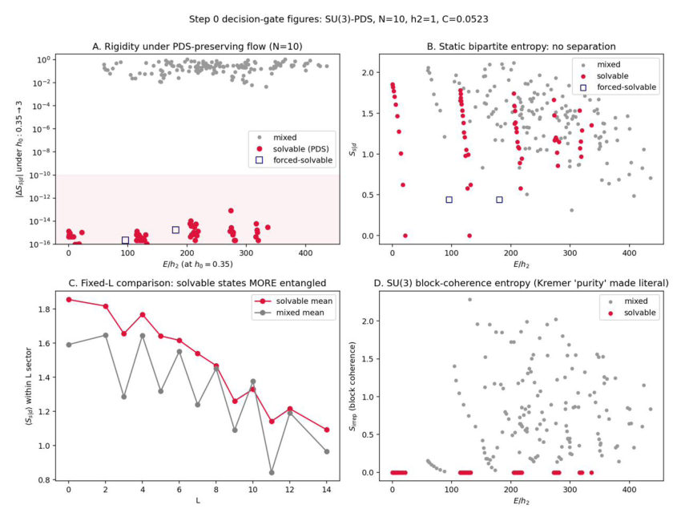
<figcaption class="paper-figure-caption"><b>Fig 1.</b> Figure 1: Decision gate at a stable SU(3)-PDS point (N = 10). The static magnitude of the s|d entanglement entropy does not separate solvable (exact-label) from mixed eigenstates: the distributions overlap, and within a fixed angular momentum the solvable states are in fact more entangled (a Simpson’s-paradox reversal). Entanglement magnitude alone is therefore not a PDS diagnostic.</figcaption>
</figure>
<figure class="paper-figure-card">
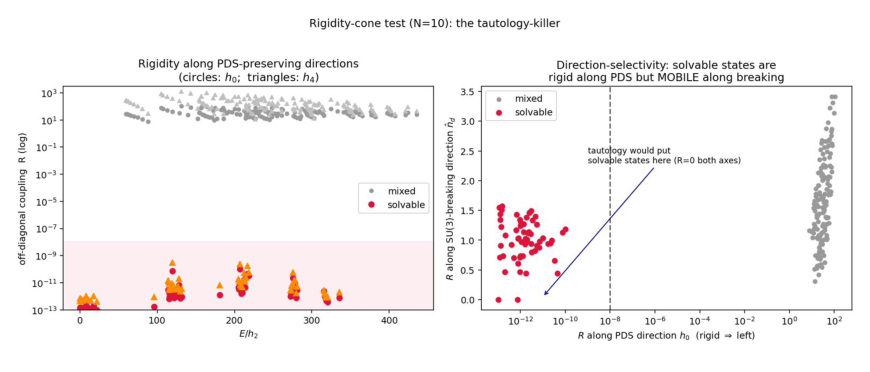
<figcaption class="paper-figure-caption"><b>Fig 2.</b> Figure 2: Cone rigidity at a stable SU(3)-PDS point (N = 10). The off-diagonal coupling RD = ∥Q D|ψ⟩∥measures the first-order response of each eigenstate to a deformation along direction D. Along the PDS-preserving directions h0 and h4 every solvable state is rigid to numerical zero (R ≲3 × 10−10, lower band) while every mixed state responds strongly (R ≳70, upper band); the separation is direction-selective, since along the SU(3)-breaking direction ˆnd the solvable states respond as much as the mixed ones (R ∼1, right). Rigidity is a property of the PDS-preserving operator cone, not of the states in isolation.</figcaption>
</figure>
<figure class="paper-figure-card">
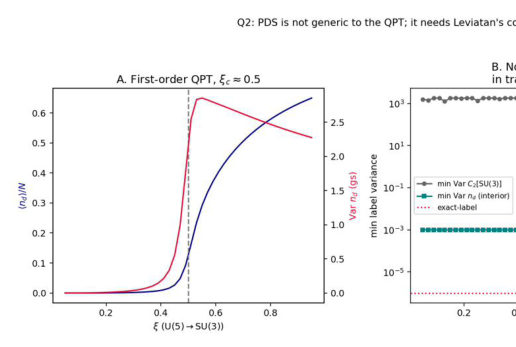
<figcaption class="paper-figure-caption"><b>Fig 3.</b> Figure 3: First-order critical point, ˆH(β0 = √</figcaption>
</figure>
<figure class="paper-figure-card">
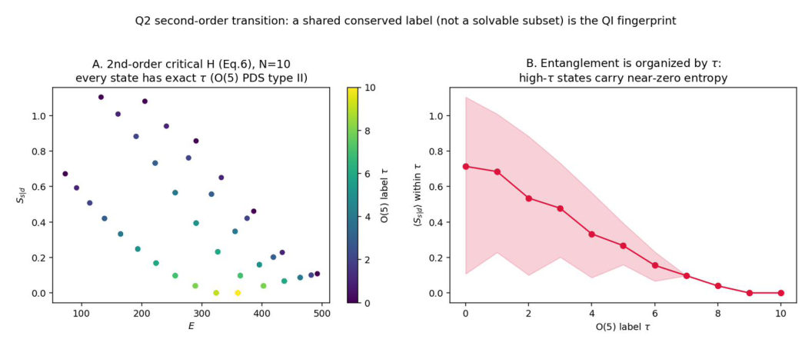
<figcaption class="paper-figure-caption"><b>Fig 4.</b> Figure 4: Second-order critical point, Eq. (6), N = 10 (type II). Every eigenstate carries an exact O(5) seniority: maxψ Var ˆC2[O(5)] = 2.7 × 10−11 over the whole spectrum (left). The s|d entanglement is graded monotonically by τ (right), ⟨S⟩= 0.71 at τ = 0 falling to 0.00 at τ = N: the entanglement lives in the low-seniority sector and high-seniority states are near-product. This seniority-graded ladder differs qualitatively from the first-order solvable-subset picture of Fig. 3.</figcaption>
</figure>
<figure class="paper-figure-card">
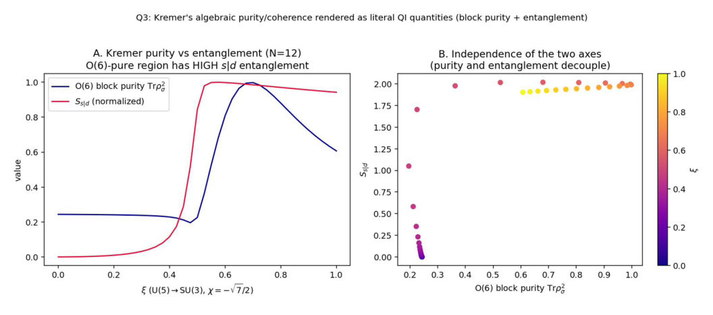
<figcaption class="paper-figure-caption"><b>Fig 5.</b> Figure 5: The purity/coherence bridge on Kremer et al.’s own states, N = 12. The O(6) block purity Trρ2 σ (left) and the bipartite s|d entanglement entropy (centre) are independent axes: the ground state becomes O(6)-pure (Trρ2 σ = 0.81–0.88) precisely where its s|d entanglement is maximal (right). The algebraic “purity” of the quasi-dynamical-symmetry literature and bipartite entanglement are logically independent QI quantities. Our O(6) machinery reproduces Kremer’s σ-fluctuation ∆σgs = 2.473 at the U(5) limit (their value 2.47) and the exactly sharp O(6) point.</figcaption>
</figure>
</div>

<p><strong>Summary.</strong> This work introduces the 'label variance' ($   ext{Var}\,\C[G]$) as a novel and robust quantum information diagnostic to detect Partial Dynamical Symmetry (PDS) in the Interacting Boson Model. It demonstrates that this structural measure successfully distinguishes between solvable and mixed eigenstates, unlike standard entanglement measures. The authors validate this method by encoding the model onto qubits, paving the way for its direct evaluation on near-term quantum hardware.</p>
<p><strong>Why it may be interesting.</strong> The development of label variance as a measurable, structure-revealing quantum invariant provides a powerful tool for classifying complex many-body systems whose symmetries are only partially preserved in nature or theory.</p>
<details>
<summary>Detailed structure</summary>
<p><strong>Main problem.</strong> The core problem is determining if Partial Dynamical Symmetry (PDS) possesses a purely structural signature within quantum eigenstates, independent of entanglement magnitude.</p>
<p><strong>Main result.</strong> The label variance ($  ext{Var}\,\C[G]$) serves as this robust, fit-independent diagnostic, successfully separating solvable states (zero variance) from mixed states ($\mathcal{O}(N^2)$).</p>
<p><strong>Method.</strong> The authors compare structural diagnostics like label variance against entanglement measures and test the method's feasibility by encoding the Hamiltonian onto a qubit register for variational state preparation.</p>
<p><strong>Model / system.</strong> The analysis is based on the Interacting Boson Model (IBM) applied to even-even nuclei, specifically anchored in $^{168}	ext{Er}$. The model Hamiltonian supports various symmetry limits, including those exhibiting PDS.</p>
<p><strong>Key observables.</strong> Label variance ($  ext{Var}\,\C[G]$), block-coherence entropy ($S_G$), and block impurity ($P_G$).</p>
<p><strong>Important parameters / regimes.</strong> The total boson number $N$, and the Hamiltonian parameters defining critical points (e.g., $eta_0$ for first/second order transitions).</p>
<p><strong>Assumptions / limitations.</strong> The primary assumption is that the label variance correctly captures the structural distinction between solvable and mixed spectral subsets, even when entanglement measures fail to do so.</p>
<p><strong>Figures summary.</strong> Figures illustrate how label variance distinguishes solvable (rigid) from mixed states, and later show the successful application of VQE/VQD protocols on a qubit register to prepare these distinct eigenstates.</p>
<p><strong>Paper structure.</strong> The paper first establishes the theoretical equivalence between vanishing variance, zero entropy, and unit purity for PDS. It then compares this structural diagnostic against entanglement measures using the IBM spectrum. Finally, it details the implementation by encoding the model onto qubits and preparing states variationally on a quantum device.</p>
</details>
<details>
<summary>Abstract</summary>
<p>Partial dynamical symmetry (PDS) is an algebraic structure in which a prescribed symmetry is neither exact nor completely broken: a subset of eigenstates keeps good quantum numbers and remains solvable while the rest of the spectrum mixes. PDS is currently identified from spectroscopic data, band-head energies, level systematics, and $B(E2)$ ratios. We ask whether it also has a purely structural signature in the eigenstates, and find that it does, though not in the magnitude of entanglement. The natural diagnostic is the variance of a symmetry Casimir, the label variance $\Var\,\C[G]$, which we show coincides with a block-coherence entropy and a block impurity: all three vanish exactly when a state carries a single irreducible-representation label. Resolved state by state, this quantity is zero on the solvable subset and of order $N^2$ on the mixed states, at stable symmetry points and at Leviatan's first- and second-order critical points, where it takes two distinct forms set by the order of the transition. The magnitude of bipartite entanglement, by contrast, does not separate solvable from mixed states and drifts even where the labels are exact. We anchor the analysis in $^{168}$Er, connect the block purity to the ``purity/coherence'' language of the quasi-dynamical-symmetry literature, and show the label variance is uncorrelated with multipartite entanglement and with magic. Finally we encode the model on a qubit register and prepare its solvable and mixed eigenstates variationally, as a step toward evaluating the diagnostic on a quantum device.</p>
</details>
<p><sub><a href="#top">↑ back to top</a></sub></p>

<p><a id="paper-2608.04369"></a></p>
<h3 id="equilibrium-thermodynamics-of-non-hermitian-dirac-fermions-caloric-and-magnetic-responses"><a href="http://arxiv.org/abs/2608.04369v1">Equilibrium Thermodynamics of Non-Hermitian Dirac Fermions: Caloric and Magnetic Responses</a></h3>
<p><strong>Authors:</strong> Francisco J. Peña, Bastian Castorene, Juan Pablo Esparza, Vladimir Juričić, Patricio Vargas<br>
<strong>Type:</strong> theory · <strong>Category:</strong> statistical mechanics · <strong>PDF:</strong> <a href="https://arxiv.org/pdf/2608.04369v1">https://arxiv.org/pdf/2608.04369v1</a><br>
<strong>Analysis basis:</strong> full PDF text, analyzed in chunks
<strong>Topic relevance:</strong> <code>Keldysh / 2PI / non-Gaussian methods</code> <strong>2/5</strong> · <code>Kondo &amp; dissipative impurity</code> <strong>2/5</strong> · <code>non-equilibrium dynamics</code> <strong>2/5</strong> · <code>analog quantum simulation</code> <strong>1/5</strong> · <code>correlated / nonlocal dissipation</code> <strong>1/5</strong> · <code>driven-dissipative phase transition</code> <strong>1/5</strong> · <code>methods for driven-dissipative</code> <strong>1/5</strong> · <code>non-equilibrium universality</code> <strong>1/5</strong></p>
<div class="figure-strip-hint">↔ Scroll figures horizontally</div>
<div class="paper-figures-scroll">
<figure class="paper-figure-card">
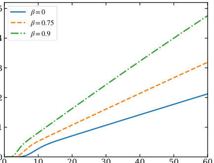
<figcaption class="paper-figure-caption"><b>Fig 1.</b> FIG. 1. Canonical heat capacity per electron at B = 1 T and PFF Nc = 75. Spectral compression shifts the Hermitian response toward lower temperatures. According to Eq. (46), all curves represent the same canonical function evaluated at the rescaled temperature T/λ.</figcaption>
</figure>
<figure class="paper-figure-card">
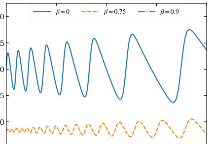
<figcaption class="paper-figure-caption"><b>Fig 2.</b> FIG. 3. Orbital magnetic moment per electron at T = 2 K and µ = 38 meV. Its field displacement and deformation- dependent amplitude follow mphys 0,+,β(B) = λ2mphys 0,+,0(Beff). The calculation excludes the regularized negative-energy Dirac-sea contribution.</figcaption>
</figure>
<figure class="paper-figure-card">
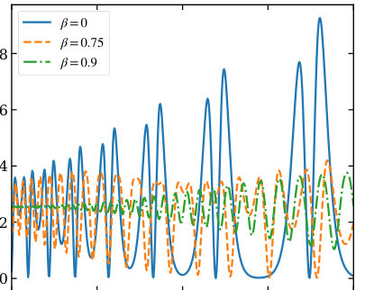
<figcaption class="paper-figure-caption"><b>Fig 3.</b> FIG. 2. Grand-canonical heat capacity per electron at T = 2 K and µ = 38 meV. Successive Landau-level crossings gen- erate oscillatory, thermally broadened structures. For an iso- lated level, the fixed-µ heat-capacity contribution vanishes at the crossing En,+(B, β) = µ and develops maxima on either side within the thermal window. The deformation- dependent field locations of these structures are controlled by Beff = (1 −β2)B through Eq. (47).</figcaption>
</figure>
<figure class="paper-figure-card">
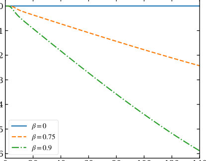
<figcaption class="paper-figure-caption"><b>Fig 4.</b> FIG. 4. Isothermal entropy change at fixed Nc = 75 and B = 1 T. Negative values of −∆S(Nc)/(NckB) correspond to entropy increase under spectral compression. The residual entropy of the fractionally filled ideal Landau level is common to both spectra and cancels from the difference.</figcaption>
</figure>
<figure class="paper-figure-card">
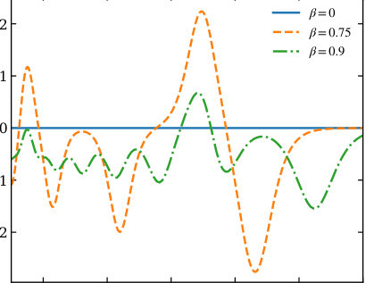
<figcaption class="paper-figure-caption"><b>Fig 5.</b> FIG. 5. Normalized fixed-µ entropy change at T = 5 K and µ = 38 meV. The sign reversals arise from the difference between the same Hermitian entropy curve evaluated at B and Beff.</figcaption>
</figure>
</div>

<p><strong>Summary.</strong> This paper develops a comprehensive thermodynamic framework for Non-Hermitian Dirac fermions in magnetic fields. It demonstrates that the system's thermodynamics can be simplified by mapping its spectrum onto an effective Hermitian model via spectral compression. This yields universal scaling relations for key responses like heat capacity and magnetization, providing a powerful tool for analyzing non-Hermitian quantum matter.</p>
<p><strong>Why it may be interesting.</strong> The methodology of using spectral mapping derived from quasi-Hermiticity to simplify complex thermodynamic calculations is highly relevant for open quantum systems, as it provides a rigorous way to connect non-Hermitian physics results back to established Hermitian statistical mechanics.</p>
<details>
<summary>Detailed structure</summary>
<p><strong>Main problem.</strong> The study establishes scaling relations governing the equilibrium thermodynamics, specifically caloric and magnetic responses, for non-Hermitian Dirac fermions subjected to a magnetic field.</p>
<p><strong>Main result.</strong> The core finding is that spectral compression allows complex Non-Hermitian thermodynamic quantities (like chemical potential and heat capacity) to be mapped onto rescaled forms of their Hermitian counterparts using an effective magnetic field.</p>
<p><strong>Method.</strong> The analysis employs similarity transformations to relate the quasi-Hermitian Hamiltonian to an effective Hermitian model, allowing the use of standard statistical mechanics techniques on the transformed spectrum.</p>
<p><strong>Model / system.</strong> The system is modeled by real-spectrum Non-Hermitian (NH) Dirac fermions, often represented using graphene as a platform, and analyzed in the presence of a magnetic field. The Hamiltonian is quasi-Hermitian but maps to an effective Hermitian model with reduced velocity.</p>
<p><strong>Key observables.</strong> Chemical potential ($\mu$), entropy ($S$), heat capacities, orbital magnetic response, and the grand partition function ($\Xi$).</p>
<p><strong>Important parameters / regimes.</strong> The non-Hermiticity parameter $eta$ (where $|eta| < 1$), temperature ($T$), chemical potential ($\mu$), and applied magnetic field ($B$). Scaling factors like $\lambda = 1 / (1 - eta^2)$ are crucial.</p>
<p><strong>Assumptions / limitations.</strong> Equilibrium is defined by thermalization with respect to the quasi-Hermitian Hamiltonian, and the analysis assumes that single-particle eigenvalues determine equilibrium quantities, which match those of the Hermitian model.</p>
<p><strong>Paper structure.</strong> The paper develops the thermodynamic framework by first establishing the spectral mapping identity ($D_eta(E; B) = D_0(E; 	ext{Beff})$), then applying this to derive scaling relations for various observables under fixed projected filling factor (PFF) and fixed chemical potential ($\mu$).</p>
</details>
<details>
<summary>Abstract</summary>
<p>We establish scaling relations governing the equilibrium thermodynamics of real-spectrum non-Hermitian Dirac fermions in a magnetic field. Assuming thermalization with respect to the quasi-Hermitian Hamiltonian, a similarity transformation maps the system at the same applied field onto a Hermitian Dirac model with reduced velocity, while the Landau-level spectrum also admits a representation in terms of a reduced effective magnetic field. This structure yields scaling relations for the chemical potential, entropy, heat capacities, and orbital magnetic response in different thermodynamic ensembles. At fixed projected filling factor (PFF), the self-consistent chemical potential follows the compressed ladder of Landau levels, and the canonical thermodynamic functions are rescaled Hermitian responses. At fixed chemical potential, Landau-level crossings generate oscillatory caloric and magnetic responses governed by the same spectral compression. Quasistatic non-Hermitian deformation at fixed PFF further yields adiabatic temperature scaling. More broadly, these results establish a thermodynamic framework for real-spectrum non-Hermitian quantum matter and provide a starting point for incorporating the effects of interactions and disorder within the same formalism.</p>
</details>
<p><sub><a href="#top">↑ back to top</a></sub></p>

<p><a id="paper-2608.04850"></a></p>
<h3 id="two-dimensional-toda-arnoldi-correspondence-holomorphic-krylov-geometry-and-counterdiabatic-transport"><a href="http://arxiv.org/abs/2608.04850v1">Two-dimensional Toda--Arnoldi correspondence: Holomorphic Krylov geometry and counterdiabatic transport</a></h3>
<p><strong>Authors:</strong> Urei Miura<br>
<strong>Type:</strong> theory · <strong>Category:</strong> statistical mechanics · <strong>PDF:</strong> <a href="https://arxiv.org/pdf/2608.04850v1">https://arxiv.org/pdf/2608.04850v1</a><br>
<strong>Analysis basis:</strong> full PDF text, analyzed in chunks
<strong>Topic relevance:</strong> <code>driven-dissipative phase transition</code> <strong>2/5</strong> · <code>non-equilibrium dynamics</code> <strong>2/5</strong> · <code>Keldysh / 2PI / non-Gaussian methods</code> <strong>1/5</strong> · <code>Kondo &amp; dissipative impurity</code> <strong>1/5</strong> · <code>correlated / nonlocal dissipation</code> <strong>1/5</strong> · <code>entanglement &amp; information structure</code> <strong>1/5</strong> · <code>methods for driven-dissipative</code> <strong>1/5</strong> · <code>non-equilibrium universality</code> <strong>1/5</strong></p>
<div class="figure-strip-hint">↔ Scroll figures horizontally</div>
<div class="paper-figures-scroll">
<figure class="paper-figure-card">
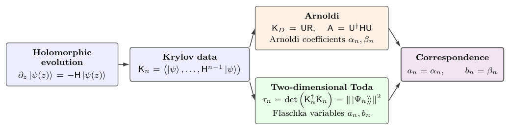
<figcaption class="paper-figure-caption"><b>Fig 1.</b> FIG. 1. Toda–Arnoldi correspondence obtained from holomorphic evolution through Krylov data. The Arnoldi coefficients αn, βn coincide, respectively, with the two-dimensional Toda variables an, bn wherever the Arnoldi method does not break down.</figcaption>
</figure>
<figure class="paper-figure-card">
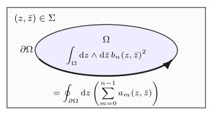
<figcaption class="paper-figure-caption"><b>Fig 2.</b> FIG. 2. Stokes–Gauss relation for a compact region Ωof the parameter surface Σ. If Ωis covered by a single local representative and ∂Ωis smooth, the area integral of b2 n equals the boundary integral of Pn−1 m=0 am. The arrow indicates the positive orientation of ∂Ω.</figcaption>
</figure>
<figure class="paper-figure-card">
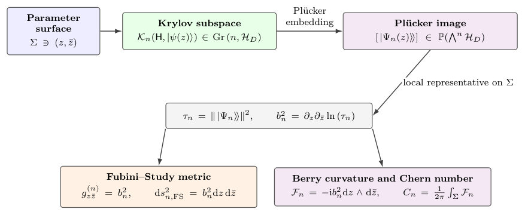
<figcaption class="paper-figure-caption"><b>Fig 3.</b> FIG. 3. Geometric quantities obtained from the holomorphic Krylov map. In the region where rank (Kn) = n, τn = ∥|Ψn⟩⟩∥2</figcaption>
</figure>
<figure class="paper-figure-card">
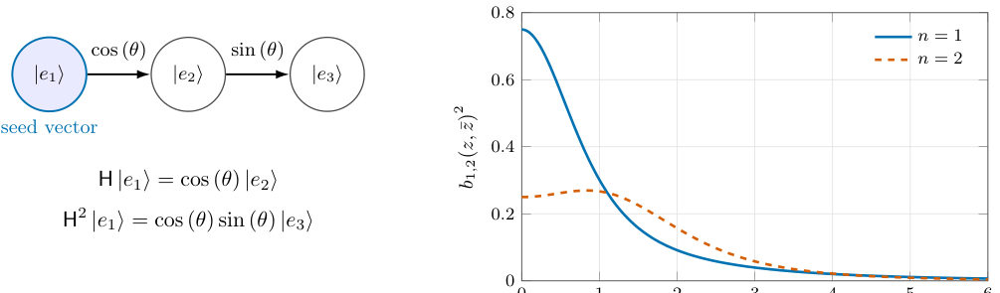
<figcaption class="paper-figure-caption"><b>Fig 4.</b> FIG. 4. Three-site non-Hermitian nonreciprocal model. (a) Directed Krylov chain generated by the seed vector |ψ(0)⟩= |e1⟩, with couplings cos (θ) and sin (θ). (b) Dependence of b1(z, ¯z)2 (blue solid line) and b2(z, ¯z)2 (orange dashed line) on |z| at θ = π/6, where dK = 3 [Eqs. (34) and (35)]. Both tend to zero as |z| →∞.</figcaption>
</figure>
<figure class="paper-figure-card">
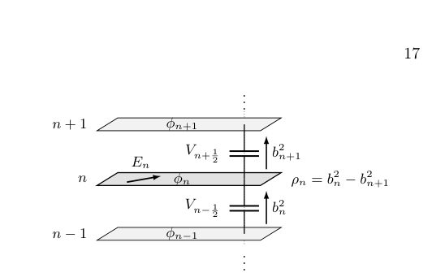
<figcaption class="paper-figure-caption"><b>Fig 5.</b> FIG. 5. Electrostatic analogy for the Toda lattice. Each layer is a copy of the parameter plane Σ with potential ϕm, and the arrow within layer n denotes the in-plane complex electric field En. An arrow between layers denotes the link polarization b2 m = exp  Vm−1</figcaption>
</figure>
</div>

<p><strong>Summary.</strong> This theoretical paper establishes a 'Toda–Arnoldi correspondence' showing that the evolution of non-Hermitian Hamiltonians, tracked via Arnoldi reduction, is governed by the mathematics of the two-dimensional Toda lattice. It provides deep insights into how geometric quantities such as the Berry curvature and Fubini–Study metric are encoded in the system's spectral coefficients.</p>
<p><strong>Why it may be interesting.</strong> This work connects non-Hermitian quantum dynamics (relevant to open systems) directly to integrable systems theory (Toda lattice), providing powerful mathematical tools to analyze spectral flow and geometric invariants like the Chern number.</p>
<details>
<summary>Detailed structure</summary>
<p><strong>Main problem.</strong> The paper establishes a deep mathematical correspondence between the dynamics generated by non-Hermitian Hamiltonians via Arnoldi reduction and the structure of the two-dimensional Toda lattice.</p>
<p><strong>Main result.</strong> It proves that Krylov Gram determinants satisfy the $  au$-function relations of the 2D Toda lattice, linking geometric quantities like the Fubini–Study metric and Berry curvature to these integrable systems.</p>
<p><strong>Method.</strong> The analysis combines concepts from numerical linear algebra (Arnoldi reduction), complex geometry (holomorphic deformations, Grassmannians), and soliton theory (Toda lattice $    au$-functions).</p>
<p><strong>Model / system.</strong> The study concerns a fixed, finite-dimensional, generally non-Hermitian Hamiltonian $H$ whose evolution is tracked using holomorphic deformation of a cyclic state vector. The mathematical framework involves the Krylov subspace generated by this system.</p>
<p><strong>Key observables.</strong> Krylov Gram determinants ($    au_n$), Arnoldi coefficients ($\alpha_n, eta_n$), Fubini–Study metric components ($b_n^2$), and Berry curvature.</p>
<p><strong>Important parameters / regimes.</strong> The complex deformation parameter $z$ and the dimensionality of the Hamiltonian/subspace. The correspondence is restricted to cyclic states.</p>
<p><strong>Assumptions / limitations.</strong> The analysis assumes a cyclic seed state vector and relies on the validity of the Arnoldi method, noting breakdowns when the Krylov dimension drops.</p>
<p><strong>Figures summary.</strong> Figures illustrate the connection between holomorphic evolution $
ightarrow$ Krylov data $\leftrightarrow$ 2D Toda variables; they also show Stokes-Gauss relations linking area integrals (related to metric) to boundary integrals (related to coefficients).</p>
<p><strong>Paper structure.</strong> The paper builds from defining the dynamics via holomorphic deformation and Krylov methods, establishing the correspondence with the 2D Toda lattice. It then explores geometric consequences like the Fubini-Study metric and Berry curvature, culminating in an electrostatic analogy for understanding these structures.</p>
</details>
<details>
<summary>Abstract</summary>
<p>Although Arnoldi reduction of a generally non-Hermitian Hamiltonian yields an upper Hessenberg matrix rather than the tridiagonal form of Hermitian Lanczos theory, we show that a closed Toda sector survives in its diagonal and subdiagonal coefficients. For a fixed finite-dimensional Hamiltonian and a cyclic state vector deformed holomorphically, the Krylov Gram determinants are $τ$ functions of the finite two-dimensional Toda lattice, whose Flaschka variables coincide exactly with these Arnoldi coefficients. The Toda dynamics therefore closes on this sector without determining the remaining upper Hessenberg entries. The subdiagonal part of the same sector also has a direct geometric meaning: the squared subdiagonal coefficients determine both the Fubini--Study metric and the Berry curvature of holomorphic Krylov subspaces, whereas the geometric quantities associated with subspaces lost at Arnoldi breakdown cease to be defined. Along a smooth real path in the cyclic region, the Arnoldi-frame connection further provides a Hermitian tridiagonal generator of exact isospectral transport. When added to the Arnoldi matrix, this generator cancels transitions between instantaneous eigenspaces and realizes counterdiabatic driving whenever the matrix is diagonalizable with a nondegenerate spectrum.</p>
</details>
<p><sub><a href="#top">↑ back to top</a></sub></p>

<p><a id="paper-2608.04844"></a></p>
<h3 id="quantum-walker-trapped-by-self-similarity-of-the-sierpinski-carpet"><a href="http://arxiv.org/abs/2608.04844v1">Quantum walker trapped by self-similarity of the Sierpiński carpet</a></h3>
<p><strong>Authors:</strong> Tomasz Sowiński<br>
<strong>Type:</strong> theory · <strong>Category:</strong> disordered systems and neural networks · <strong>PDF:</strong> <a href="https://arxiv.org/pdf/2608.04844v1">https://arxiv.org/pdf/2608.04844v1</a><br>
<strong>Analysis basis:</strong> full PDF text, analyzed in chunks
<strong>Topic relevance:</strong> <code>non-equilibrium dynamics</code> <strong>2/5</strong> · <code>analog quantum simulation</code> <strong>1/5</strong> · <code>driven-dissipative phase transition</code> <strong>1/5</strong> · <code>methods for driven-dissipative</code> <strong>1/5</strong> · <code>non-equilibrium universality</code> <strong>1/5</strong> · <code>scars &amp; prethermalization</code> <strong>1/5</strong></p>
<div class="figure-strip-hint">↔ Scroll figures horizontally</div>
<div class="paper-figures-scroll">
<figure class="paper-figure-card">
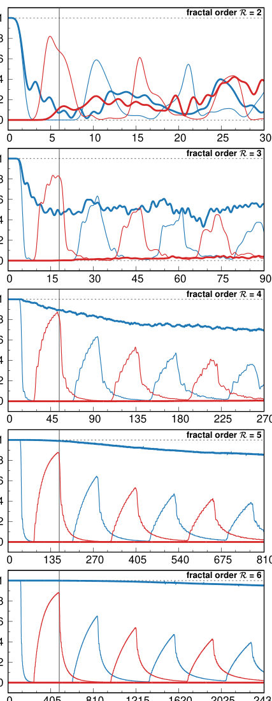
<figcaption class="paper-figure-caption"><b>Fig 1.</b> FIG. 2. Probability of finding the particle in the initial zone ZINI (blue) and the final zone ZFIN (red) zone of the lattice in the case of Sierpi´nski (thick) and uniform (thin) lattice. In all the cases particle is initially localised in the corner of the lattice be- longing to the initial zone. Clearly, for increasing fractal order R, the particle finds it increasingly difficult to reach the oppo- site zone of the lattice and remains trapped in the initial zone. Contrarily, for the uniform lattice, the particle reaches the op- posite zone in time proportional to the edge size of the lattice, TU ≈2ℏD/3J marked with a vertical grey line.</figcaption>
</figure>
<figure class="paper-figure-card">
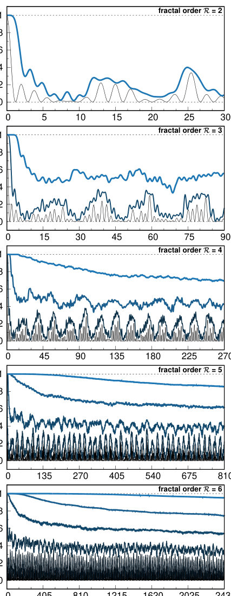
<figcaption class="paper-figure-caption"><b>Fig 2.</b> FIG. 3. Time evolution of the initial-zone probabilities SK(t) on the Sierpi´nski lattice, for the hierarchy of corner zones of increasing size 3K, K = 0, 1, . . . , R−1 (darker to lighter shades of blue), for the same fractal orders R = 2, . . . , 6 as in Fig. 2. The lightest curve in each panel, corresponding to K = R −1, coincides with the thick blue curve of Fig. 2.</figcaption>
</figure>
<figure class="paper-figure-card">
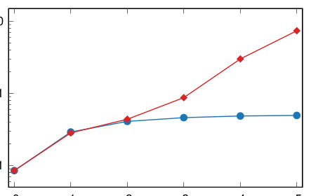
<figcaption class="paper-figure-caption"><b>Fig 3.</b> FIG. 4. Rescaled escape time TKJ/(ℏ3K) as a function of zone range K, for the uniform (blue) and the Sierpi´nski (red) lattice of fractal order R = 6. Note the significant difference in their dependence on zone range K.</figcaption>
</figure>
</div>

<p><strong>Summary.</strong> The paper investigates how quantum walkers behave on lattices with fractal geometry, specifically the Sierpiński carpet. It shows that compared to uniform lattices where particles spread ballistically, the fractal structure causes strong, self-similar trapping near the starting point. This highlights how geometric constraints alone can suppress quantum transport.</p>
<p><strong>Why it may be interesting.</strong> This work provides a clean theoretical demonstration of how geometric constraints, even without explicit disorder potentials, can fundamentally alter quantum transport properties by creating hierarchical barriers that suppress long-range coherence.</p>
<details>
<summary>Detailed structure</summary>
<p><strong>Main problem.</strong> The study compares quantum particle transport dynamics on a fractal lattice (Sierpiński carpet) against its counterpart on a uniform lattice of the same size.</p>
<p><strong>Main result.</strong> While particles move ballistically on the uniform lattice, they become increasingly trapped near their starting point on the Sierpiński carpet as the fractal order increases.</p>
<p><strong>Method.</strong> The dynamics are simulated by solving the time-dependent Schrödinger equation using numerical methods like Runge-Kutta, focusing on zone-integrated probabilities for comparison.</p>
<p><strong>Model / system.</strong> A single quantum particle is modeled moving via nearest-neighbor tunneling on a square lattice structure that is iteratively modified into a Sierpiński carpet fractal. The dynamics are compared against the same system on a standard uniform lattice.</p>
<p><strong>Key observables.</strong> Zone-integrated probabilities for finding the particle in the initial zone ($S(t)$) versus the opposite corner zone ($F(t)$).</p>
<p><strong>Important parameters / regimes.</strong> Fractal order ($R$), lattice size, and time ($t$).</p>
<p><strong>Assumptions / limitations.</strong> The analysis assumes continuous-time dynamics governed by nearest-neighbor tunneling only to sites belonging to the defined lattice structure.</p>
<p><strong>Figures summary.</strong> Figures compare $S(t)$ and $F(t)$ for different fractal orders, showing confinement on the Sierpiński carpet versus ballistic spread on the uniform lattice. Other figures analyze the scaling of characteristic crossing times across various zone sizes ($K$).</p>
<p><strong>Paper structure.</strong> The paper establishes the model by defining the dynamics on both lattices, presents key observables (zone-integrated probabilities), and then systematically compares the time evolution results to demonstrate the qualitative difference between ballistic transport and fractal trapping.</p>
</details>
<details>
<summary>Abstract</summary>
<p>We study the dynamics of a single quantum particle on a finite-size square lattice with a fractal structure resembling the Sierpiński carpet, and compare it to the dynamics on a uniform lattice of the same size. For a particle initially localized at a corner of the lattice, we monitor the probability of finding it near the initial and opposite corners using zone-integrated probabilities, allowing a consistent comparison across fractal orders. While on the uniform lattice the particle reaches the opposite corner ballistically, in a time proportional to the lattice size, on the Sierpiński lattice it becomes increasingly confined to the vicinity of its initial position. We show that this trapping builds up self-similarly across the whole hierarchy of corner zones of the lattice.</p>
</details>
<p><sub><a href="#top">↑ back to top</a></sub></p>

<p><a id="paper-2608.04303"></a></p>
<h3 id="the-rank-and-layer-distributions-in-random-recursive-trees"><a href="http://arxiv.org/abs/2608.04303v1">The rank and layer distributions in random recursive trees</a></h3>
<p><strong>Authors:</strong> Huck Stepanyants, P. L. Krapivsky, Harrison Hartle, Dmitri Krioukov<br>
<strong>Type:</strong> theory · <strong>Category:</strong> statistical mechanics · <strong>PDF:</strong> <a href="https://arxiv.org/pdf/2608.04303v1">https://arxiv.org/pdf/2608.04303v1</a><br>
<strong>Analysis basis:</strong> full PDF text, analyzed in chunks
<strong>Topic relevance:</strong> <code>non-equilibrium dynamics</code> <strong>2/5</strong> · <code>non-equilibrium universality</code> <strong>2/5</strong> · <code>Keldysh / 2PI / non-Gaussian methods</code> <strong>1/5</strong> · <code>driven-dissipative phase transition</code> <strong>1/5</strong> · <code>methods for driven-dissipative</code> <strong>1/5</strong></p>
<div class="figure-strip-hint">↔ Scroll figures horizontally</div>
<div class="paper-figures-scroll">
<figure class="paper-figure-card">
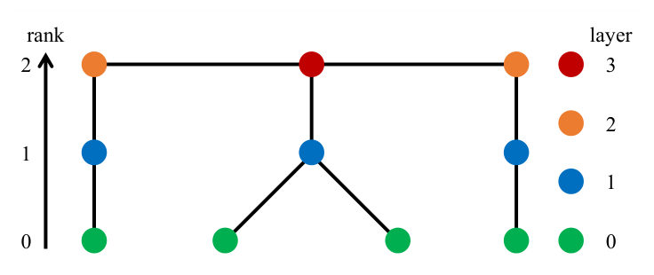
<figcaption class="paper-figure-caption"><b>Fig 1.</b> FIG. 1. Stratification of a tree with n = 10 nodes by rank and layer. The nodes are arranged vertically in the order of increasing rank (distance to nearest leaf) from 0 to 2. Node layer (number of rounds of leaf-removal to become a leaf) is indicated by color, from green, layer 0, to red, layer 3. In any tree, the rank and layer of leaves are both equal to 0, while the rank of their nonleaf neighbors is 1.</figcaption>
</figure>
<figure class="paper-figure-card">
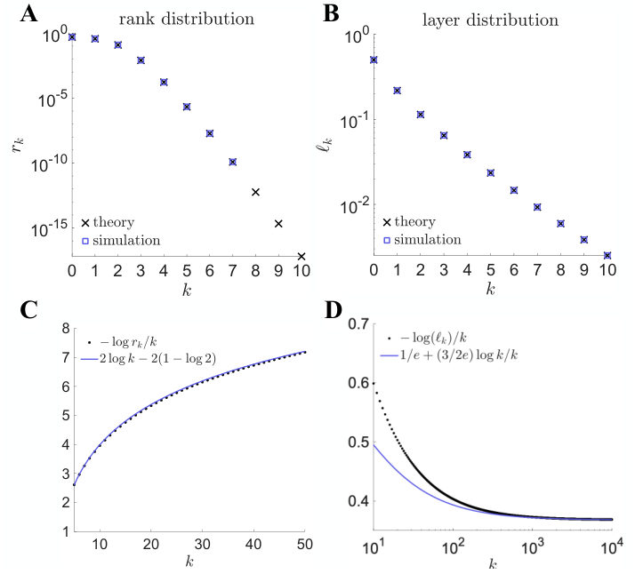
<figcaption class="paper-figure-caption"><b>Fig 2.</b> FIG. 2. (A) The numeric evaluation of the rank distribution values rk = ¯rk −¯rk+1 from Theorem 1 versus the corresponding empirical values averaged across 1.5 × 109 simulated RRTs of size n = 10, 000. (B) The numeric evaluation of the layer distribution values ℓk = ¯ℓk −¯ℓk+1 from Theorem 2 versus the corresponding empirical values for the same simulated RRTs as in (A). (C) The numeric evaluation of −log(rk)/k from Theorem 1 (the black dots) versus the large-k asymptotic of rk from Theorem 3 (the blue curve). (D) The numeric evaluation of −log(ℓk)/k from Theorem 2 (the black dots) versus the large-k asymptotic of ℓk from Conjecture 1 (the blue curve).</figcaption>
</figure>
<figure class="paper-figure-card">
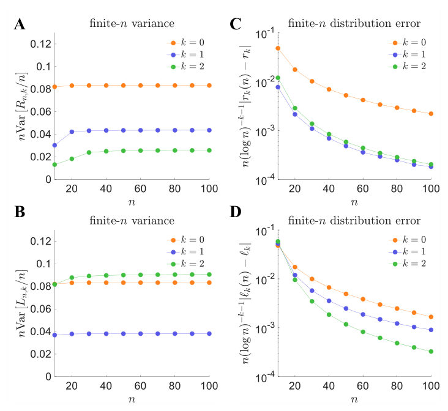
<figcaption class="paper-figure-caption"><b>Fig 3.</b> FIG. 3. (A, B) The variances of the rank and layer fractions rescaled by n, nVar [Rn,k/n] and nVar [Ln,k/n] (dots connected by lines), in 2 × 108 simulated RRTs for each value of n and k = 0, 1, 2, are upper bounded by constants in agreement with Theorem 5. (C, D) The differences between the expected rank and layer fractions rk(n) and ℓk(n) and their corresponding limits rescaled by n(log n)−k−1 (dots connected by lines) in the same RRTs as in (A, B) are upper bounded by constants in agreement with Theorem 6.</figcaption>
</figure>
<figure class="paper-figure-card">
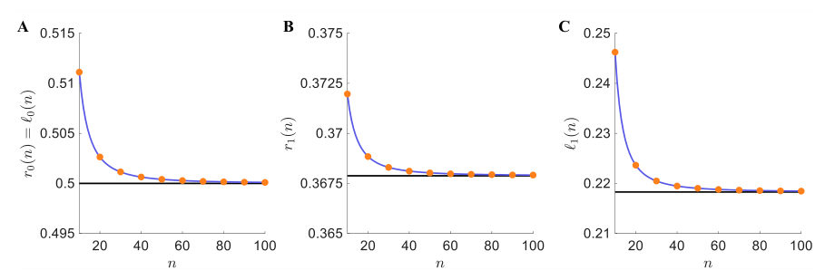
<figcaption class="paper-figure-caption"><b>Fig 4.</b> FIG. 4. The average fractions of leaves (A), nodes of rank 1 (B), and at layer 1 (C) across 2 × 108 simulated RRTs for each value of n (the orange dots) versus the corresponding expected fractions in Theorem 7 (the blue curves) and their n →∞limits in Corollary 2.1 (the black lines). For each simulation point, the uncertainty is smaller than the marker size.</figcaption>
</figure>
<figure class="paper-figure-card">
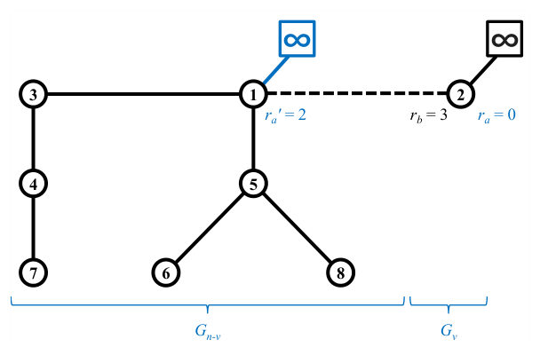
<figcaption class="paper-figure-caption"><b>Fig 5.</b> FIG. 5. Example of tree-splitting and anchoring in an RRT with n = 8 nodes. The anchor shown by the black boxed ∞is attached to node t = 2. The rank of t becomes rb = 3. Then the edge between t = 2 and its ancestor t′ = 1 is deleted, after which t′ is anchored as well. The rank of t is now ra = 0, while the rank of t′ is now r′ a = 2. The elements of the original tree are colored black, while changes resulting from this tree splitting process are colored blue. In the figure, the size of the split subtree Gv rooted at t = 2 is v = 1, corresponding to Case 1 in Sec. III B.</figcaption>
</figure>
</div>

<p><strong>Summary.</strong> This theoretical paper analyzes structural properties of Random Recursive Trees by defining 'rank' and 'layer' distributions. Using advanced mathematical techniques like recursive relations and traveling wave analysis, the authors derive precise asymptotic formulas showing that these distributions decay factorially (for rank) and geometrically (for layer). The work provides a powerful framework for analyzing network structure in complex systems.</p>
<p><strong>Why it may be interesting.</strong> While focused on graph theory, the mathematical machinery—solving complex recursions, analyzing wavefront propagation via PDEs, and deriving precise asymptotic scaling laws—is highly relevant to non-equilibrium statistical mechanics problems involving pattern formation or relaxation dynamics in physical systems.</p>
<details>
<summary>Detailed structure</summary>
<p><strong>Main problem.</strong> The primary goal is deriving exact recursive expressions and asymptotic distributions for two structural measures, 'rank' and 'layer', within Random Recursive Trees (RRTs).</p>
<p><strong>Main result.</strong> The rank distribution decays factorially, while the layer distribution exhibits a geometric decay characterized by complex exponential forms involving constants like $1/e$.</p>
<p><strong>Method.</strong> The authors employ recursive methods, tree-splitting techniques, and advanced asymptotic analysis, including solving differential equations using a traveling wave ansatz.</p>
<p><strong>Model / system.</strong> The model is the Random Recursive Tree (RRT), a growing network structure where nodes are added sequentially by connecting to an existing node chosen uniformly at random. The analysis focuses on structural properties of this graph ensemble.</p>
<p><strong>Key observables.</strong> Rank ($r_k$): distance to the closest leaf; Layer ($\ell_k$): number of leaf-stripping rounds required for a node to become a leaf. Also analyzed are their respective fractions and variances.</p>
<p><strong>Important parameters / regimes.</strong> The size of the tree, $n$, is taken to infinity ($n 	o \infty$) for asymptotic results. The index $k$ (rank/layer) is also studied in the large-$k$ limit.</p>
<p><strong>Assumptions / limitations.</strong> Key assumptions include the validity of the traveling wave ansatz and the assertion that $\ell_k \sim ar{\ell}_k$, which cannot be rigorously derived from the main asymptotic equations provided.</p>
<p><strong>Figures summary.</strong> Figures illustrate the concepts of rank and layer on small trees, compare computed vs. simulated distributions for $r_k$ and $\ell_k$, and show convergence rates related to variances and wavefront growth.</p>
<p><strong>Paper structure.</strong> The paper builds from deriving exact recursive expressions (Theorems 1 &amp; 2) to establishing self-averaging properties (Theorem 5). It then tackles the asymptotic limits, using advanced differential equation techniques (Traveling Wave Ansatz) to derive the final exponential decay laws for $ar{\ell}_k$ and conjectures for $\ell_k$.</p>
</details>
<details>
<summary>Abstract</summary>
<p>The distribution of node depths in a network is crucial for analyzing network structure. Two measures, rank and layer, quantify how deep inside a network a node is. The rank is the node's distance to the closest leaf, a node of degree 1. The layer is the number of times all leaves must be stripped off for the node to become a leaf. We derive exact recursive expressions for the rank and layer distributions in random recursive trees. We show that the rank and layer distributions decay factorially and geometrically, respectively, and prove the self-averaging of the numbers of nodes with fixed rank or layer. Unlike previous studies, our approach does not depend on labels or a root node, providing a more versatile framework for analyzing rank and layer distributions in complex networks.</p>
</details>
<p><sub><a href="#top">↑ back to top</a></sub></p>

<p><a id="paper-2608.05140"></a></p>
<h3 id="a-fractional-quantum-hall-factory-on-quantum-processors-constant-depth-preparation-of-clustered-non-abelian-states"><a href="http://arxiv.org/abs/2608.05140v1">A fractional quantum Hall factory on quantum processors: constant-depth preparation of clustered non-Abelian states</a></h3>
<p><strong>Authors:</strong> Cheng Xu, Ching Hua Lee, Hong-Hao Tu, Yang Zhang<br>
<strong>Type:</strong> both · <strong>Category:</strong> strongly correlated electrons · <strong>PDF:</strong> <a href="https://arxiv.org/pdf/2608.05140v1">https://arxiv.org/pdf/2608.05140v1</a><br>
<strong>Analysis basis:</strong> full PDF text, analyzed in chunks
<strong>Topic relevance:</strong> <code>analog quantum simulation</code> <strong>2/5</strong> · <code>QC/QI experiment</code> <strong>1/5</strong> · <code>entanglement &amp; information structure</code> <strong>1/5</strong> · <code>methods for driven-dissipative</code> <strong>1/5</strong> · <code>non-equilibrium dynamics</code> <strong>1/5</strong></p>
<div class="figure-strip-hint">↔ Scroll figures horizontally</div>
<div class="paper-figures-scroll">
<figure class="paper-figure-card">
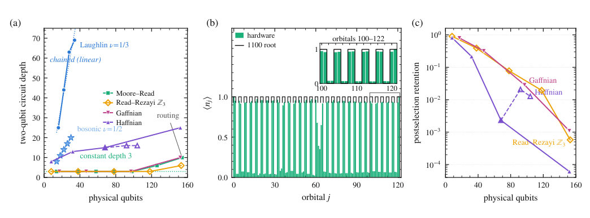
<figcaption class="paper-figure-caption"><b>Fig 1.</b> FIG. 1. The clustering dichotomy (linear vs. constant circuit depth) for state preparation across our FQH catalog. (a) Routed two-qubit depth after transpilation against qubit count for six families of FQH states we prepared: the two chained Laughlin recursions, the fermionic ν = 1/3 and the dual-rail bosonic ν = 1/2, both grow linearly, while the clustered Moore–Read (to 98 qubits), Read–Rezayi Z3 (to 118), and Gaffnian (to 97) hold constant depth three, and the Haffnian, whose squeeze runs two levels deep, sits at depth 8 to 16. Open dashed markers are the depth-16 ibm kingston registers that extend the Haffnian clean ladder to 104 qubits. Beyond roughly 120 qubits, heavy-hex routing...</figcaption>
</figure>
<figure class="paper-figure-card">
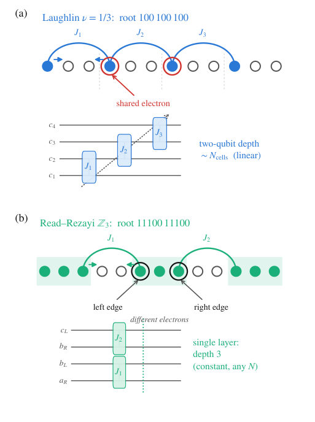
<figcaption class="paper-figure-caption"><b>Fig 2.</b> FIG. 2. How the 2-qubit gate depth scales depends cru- cially on the clustering properties of the FQH state to be prepared. (a) Laughlin ν = 1/3 (root 100 100 100): consecu- tive junction squeezes share an electron, so the flag rotations form a sequential chain and the depth grows with size. (b) Read–Rezayi Z3 (root 11100 11100): junctions couple disjoint electron pairs and fire in parallel at constant depth. The junc- tion squeezes Ji and their amplitudes are defined in Sec. II C [Eq. (2)], the flag-rotation circuits in the same subsection, and the four-family gallery with circuit sketches in Fig. S2 of the Appendix [55].</figcaption>
</figure>
<figure class="paper-figure-card">
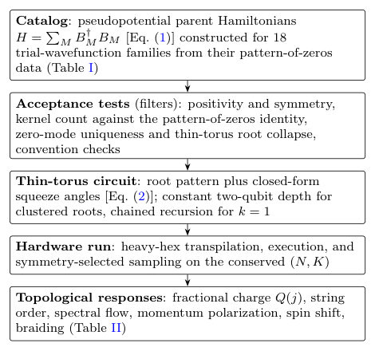
<figcaption class="paper-figure-caption"><b>Fig 3.</b> FIG. 3. Workflow of our FQH state construction and mea- surement (N: particle number; K: total momentum around the cylinder; the kernel count is the zero-mode degeneracy of Eq. (1)). Each family’s pattern-of-zeros data enters at the top box. We construct its parent Hamiltonian from that data and certify it back against the same data (kernel count against the (k, r)-admissibility count, thin-torus limit against the root pattern), and only the certified zero-mode kernel then supplies the circuit amplitudes, the acceptance certificates, the posts- election quantum numbers, and the response protocols.</figcaption>
</figure>
<figure class="paper-figure-card">
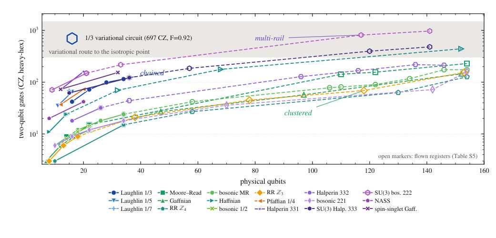
<figcaption class="paper-figure-caption"><b>Fig 4.</b> FIG. 4. Transpiled two-qubit cost against qubit count across the catalog. Filled markers are the exact-verification window, where every circuit carries an exact-diagonalization fidelity (Table I); open markers continue each family along its flown scaling ladder to chip scale, up to 154 qubits, at the routed depths listed in the footnotes of Table S5 of the Appendix [55]. Hue encodes the structural branch: chained Abelian (blues, shown over the verification window; their chip-scale depth scaling is in Fig. 1), clustered non-Abelian and non-unitary (greens and oranges), and multi-rail multicomponent (violets). The gray band is the variational route to the isotropic point (Sec. V).</figcaption>
</figure>
<figure class="paper-figure-card">
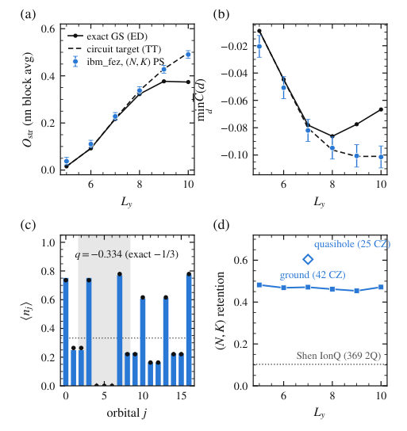
<figcaption class="paper-figure-caption"><b>Fig 5.</b> FIG. 5. Fixed-depth Ly sweep of the ν = 1/3 Laughlin state on ibm fez, 8192 shots per circuit, readout-mitigated and (N, K)-postselected. (a) String-order crossover. (b) Correlation-hole formation. (c) Quasihole domain wall and window charge. (d) Postselection retention. Error bars are bi- nomial shot noise 1/ p</figcaption>
</figure>
</div>

<p><strong>Summary.</strong> The paper presents a scalable method to simulate exotic Fractional Quantum Hall states on quantum processors. It demonstrates that non-Abelian clustered FQH states can be prepared with constant circuit depth, contrasting sharply with the linear depth required for simpler Abelian states. This establishes a powerful new route for studying topological matter beyond current hardware limitations.</p>
<p><strong>Why it may be interesting.</strong> This work provides concrete quantum circuit blueprints for simulating highly complex, strongly correlated electron phenomena (FQH physics) that are otherwise inaccessible due to exponential resource scaling in traditional methods.</p>
<details>
<summary>Detailed structure</summary>
<p><strong>Main problem.</strong> The core problem is developing a scalable method to prepare exotic Fractional Quantum Hall (FQH) states, particularly those exhibiting non-Abelian anyon statistics, on programmable quantum hardware.</p>
<p><strong>Main result.</strong> Clustered non-Abelian FQH states can be prepared using parallel quantum circuits with a two-qubit depth independent of system size (constant depth), unlike the Abelian Laughlin state which requires linearly growing circuit depth.</p>
<p><strong>Method.</strong> The authors use a systematic framework to catalog FQH states by constructing parent Hamiltonians from pattern-of-zeros data, translating these into quantum circuits for implementation on hardware like IBM Heron processors.</p>
<p><strong>Model / system.</strong> The study focuses on FQH matter, modeling various states including the Abelian Laughlin state and non-Abelian Read–Rezayi $\mathbb{Z}_3$ and $\mathbb{Z}_4$ states. These are analyzed using thin-torus circuits derived from pseudopotential parent Hamiltonians.</p>
<p><strong>Key observables.</strong> Fractional quasihole charges, non-Abelian braiding data (measured interferometrically), and circuit depth scaling.</p>
<p><strong>Important parameters / regimes.</strong> System size (up to 156 qubits), two-qubit gate depth, and the clustering property of the state wavefunction.</p>
<p><strong>Assumptions / limitations.</strong> The primary limitation at large scales is identified as per-qubit readout error rather than the gate count itself; constant depth relies on junction squeezes forming disjoint blocks.</p>
<p><strong>Figures summary.</strong> Figures compare circuit depth scaling, illustrating the dichotomy between linear depth (Laughlin) and constant depth (clustered non-Abelian states) for various FQH models.</p>
<p><strong>Paper structure.</strong> The paper progresses from establishing a systematic framework to cataloging states, demonstrating the circuit construction pipeline, comparing depth scalings based on clustering properties, and finally validating results by measuring topological observables like fractional charge and braiding data.</p>
</details>
<details>
<summary>Abstract</summary>
<p>Non-Abelian anyons arise as exotic excitations in fractional quantum Hall (FQH) matter and have proved very elusive to realize in conventional platforms. In this work, we show that on a programmable quantum hardware platform, the more exotic FQH excitations are the less costly ones to prepare: clustered non-Abelian FQH states admit parallel quantum preparation circuits whose two-qubit depth is independent of system size, while constructing the more common Abelian Laughlin state requires a sequential circuit chain with linear depth. The centerpiece of this work is our new systematic framework for cataloging possible FQH states and preparing them on quantum circuits at unprecedented scale and variety. Our prepared parafermionic Read--Rezayi $\mathbb{Z}_3$ state holds depth 3 from 8 to 118 qubits, and full root sampling extends to a 154-qubit, 104-electron Read--Rezayi $\mathbb{Z}_4$ state. In all, our demonstrated 18-family catalog of prepared FQH states extends to all 156 qubits of an IBM Heron processor, limited only by existing hardware scale. Measurements on the prepared states recover the expected fractional quasihole charges, with the charge estimator exact in every symmetry-selected shot for the clustered states, and braiding data of the non-Abelian $e/4$ quasihole measured via interferometric extensions. Our work establishes a scalable route to studying FQH physics on quantum processors and opens new avenues for preparing and probing non-Abelian topological matter far beyond the reach of conventional platforms.</p>
</details>
<p><sub><a href="#top">↑ back to top</a></sub></p>

<p><a id="paper-2608.04350"></a></p>
<h3 id="quantized-topological-invariant-of-symmetry-projected-gibbs-states"><a href="http://arxiv.org/abs/2608.04350v1">Quantized topological invariant of symmetry-projected Gibbs states</a></h3>
<p><strong>Authors:</strong> Weiguang Cao, Haruki Watanabe<br>
<strong>Type:</strong> theory · <strong>Category:</strong> statistical mechanics · <strong>PDF:</strong> <a href="https://arxiv.org/pdf/2608.04350v1">https://arxiv.org/pdf/2608.04350v1</a><br>
<strong>Analysis basis:</strong> full PDF text, analyzed in chunks
<strong>Topic relevance:</strong> <code>analog quantum simulation</code> <strong>2/5</strong> · <code>Keldysh / 2PI / non-Gaussian methods</code> <strong>1/5</strong> · <code>driven-dissipative phase transition</code> <strong>1/5</strong> · <code>entanglement &amp; information structure</code> <strong>1/5</strong> · <code>methods for driven-dissipative</code> <strong>1/5</strong></p>
<div class="figure-strip-hint">↔ Scroll figures horizontally</div>
<div class="paper-figures-scroll">
<figure class="paper-figure-card">
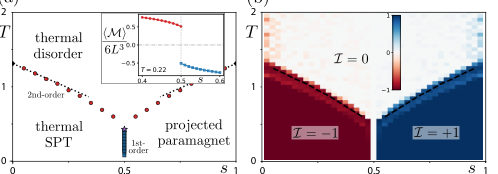
<figcaption class="paper-figure-caption"><b>Fig 1.</b> FIG. 1. (a) Finite-regulator estimates of the projected phase diagram. Red circles, blue squares, black diamonds, and the star denote the βµ = 4 arms, first-order wall, exact end- points, and wall endpoint; red bars are finite-size-scaling fit errors, and black dotted lines are the endpoint tangents in Eq. (19). Inset: stable-branch ⟨M⟩/(6L3) data at L = 12, βµ = 4, and T = 0.22, where M := ∂sH; red circles and blue squares denote deconfined- and confined-prepared runs. (b) The L = 8 conditional finite-size QMC proxy I8 for I, ob- tained from a positive worldsheet-sector splitting, conditional on the spatial-sheet suppression condition in Eq. (28). Red, blue, and white denote −1, +1, 0;...</figcaption>
</figure>
</div>

<p><strong>Summary.</strong> The authors study symmetry-projected Gibbs states in a 3D cluster model to characterize the resulting phase diagram. They introduce a quantized topological invariant, the flux-twisted membrane index, capable of distinguishing between topologically ordered, paramagnetically ordered, and disordered phases. The methodology combines theoretical analysis with advanced Quantum Monte Carlo simulations.</p>
<p><strong>Why it may be interesting.</strong> This work provides concrete numerical evidence for how imposing global symmetries (via projection) can stabilize exotic quantum phases at non-zero temperatures, which is a key topic in modern condensed matter theory.</p>
<details>
<summary>Detailed structure</summary>
<p><strong>Main problem.</strong> The study investigates how projecting Gibbs states onto symmetric sectors stabilizes topological phases at finite temperatures, aiming to determine if this projection induces a phase transition where none existed before.</p>
<p><strong>Main result.</strong> A flux-twisted membrane index distinguishes three distinct phases (SPT, projected-paramagnetic, and disordered) with quantized values of $-1, +1,$ and $0$. The phase diagram exhibits continuous transitions and a self-dual first-order line.</p>
<p><strong>Method.</strong> The analysis combines theoretical derivations involving partition function ratios and symmetry projectors with extensive Quantum Monte Carlo (QMC) simulations on 3D tori.</p>
<p><strong>Model / system.</strong> The system is modeled using a three-dimensional cluster-model interpolation Hamiltonian $H(s)$ that smoothly transitions between a Symmetry-Protected Topological (SPT) state and a trivial paramagnet. The analysis focuses on the projected Gibbs states defined by specific symmetry projectors ($\mathcal{P}_{loc}$ or $\mathcal{P}_+$).</p>
<p><strong>Key observables.</strong> Flux-twisted membrane index ($I$), free-energy splittings ($F_\Sigma(s, T)$), and tension diagnostics (spatial-sheet, winding-line, interface tensions).</p>
<p><strong>Important parameters / regimes.</strong> The interpolation parameter $s \in [0, 1]$, temperature $T$, and lattice size $L$. Critical values include $T_{I} \approx 1.3133$ for the endpoint mapping.</p>
<p><strong>Assumptions / limitations.</strong> Quantization away from specific limits requires positive spatial-sheet, winding-line, and interface tensions; theoretical derivations rely on assumptions about sector asymptotics (Hypothesis H).</p>
<p><strong>Figures summary.</strong> Figure 1 illustrates the finite-regulator estimate of the projected phase diagram showing three distinct regions separated by continuous and first-order lines. Other figures detail the geometry involving noncontractible cycles.</p>
<p><strong>Paper structure.</strong> The paper establishes the physical context via symmetry projection, derives a topological index ($I$), calculates this index using QMC on finite lattices, and maps out the resulting phase diagram structure across varying parameters $s$ and $T$.</p>
</details>
<details>
<summary>Abstract</summary>
<p>We study Gibbs states projected onto the symmetric sector of contractible one-form symmetries. In a three-dimensional cluster-model interpolation, this projection stabilizes symmetry-protected topological and projected-paramagnetic phases, both sharply distinct from thermal disorder. A flux-twisted membrane invariant distinguishes these three phases by the values $-1,+1,0$, respectively. These values are exact on the endpoint, self-dual, zero-temperature, and infinite-temperature lines; elsewhere their quantization requires positive spatial-sheet, winding-line, and interface tensions. Quantum Monte Carlo supports the quantization through tension diagnostics and direct finite-size estimates.</p>
</details>
<p><sub><a href="#top">↑ back to top</a></sub></p>

<p><a id="paper-2608.04601"></a></p>
<h3 id="solving-differential-equations-using-continuous-variable-quantum-annealing"><a href="http://arxiv.org/abs/2608.04601v1">Solving Differential Equations Using Continuous-Variable Quantum Annealing</a></h3>
<p><strong>Authors:</strong> Kazuki Miyanishi, Soshun Naito, Asuka Koura, Kazue Kudo, Toshiki Yamaji, Yuichiro Matsuzaki<br>
<strong>Type:</strong> theory · <strong>Category:</strong> quantum information and computing · <strong>PDF:</strong> <a href="https://arxiv.org/pdf/2608.04601v1">https://arxiv.org/pdf/2608.04601v1</a><br>
<strong>Analysis basis:</strong> full PDF text, analyzed in chunks
<strong>Topic relevance:</strong> <code>analog quantum simulation</code> <strong>2/5</strong> · <code>Keldysh / 2PI / non-Gaussian methods</code> <strong>1/5</strong> · <code>correlated cavity matter</code> <strong>1/5</strong> · <code>methods for driven-dissipative</code> <strong>1/5</strong></p>
<div class="figure-strip-hint">↔ Scroll figures horizontally</div>
<div class="paper-figures-scroll">
<figure class="paper-figure-card">
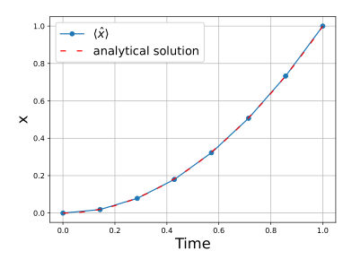
<figcaption class="paper-figure-caption"><b>Fig 1.</b> FIG. 1. Solution of Eq. (16). The horizontal axis represents τ, and the vertical axis represents x(τ). The numerical results obtained by continuous-variable QA are shown in blue, and the analytical solution is shown by the red dotted line. See Section IV A for the parameters used in the numerical calcu- lation.</figcaption>
</figure>
<figure class="paper-figure-card">
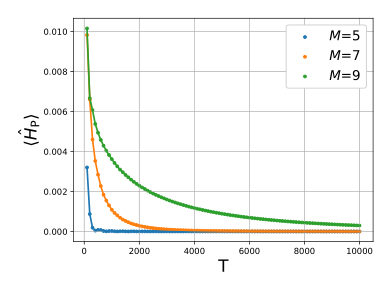
<figcaption class="paper-figure-caption"><b>Fig 2.</b> FIG. 2. Relationship between the expectation value of ˆHP (vertical axis) and the annealing time T (horizontal axis) when solving Eq. (16). As the number of divisions increases, the final expectation value of ˆHP remains farther from zero. Increasing the annealing time T makes the expectation value of ˆHP approach zero. See Section IV A for the parameters used in the numerical calculation.</figcaption>
</figure>
<figure class="paper-figure-card">
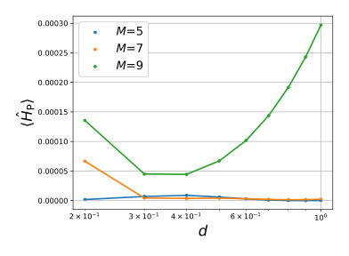
<figcaption class="paper-figure-caption"><b>Fig 3.</b> FIG. 3. Relationship between the expectation value of ˆHP (vertical axis) and the coefficient d of ˆHD (horizontal axis) when solving Eq. (16). Under conditions where annealing succeeds, the expectation value of ˆHP does not change greatly even when d is varied. See Section IV A for the parameters used in the numerical calculation.</figcaption>
</figure>
<figure class="paper-figure-card">
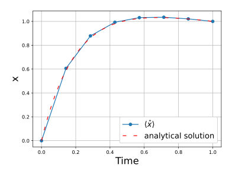
<figcaption class="paper-figure-caption"><b>Fig 4.</b> FIG. 4. Solution of Eq. (17). The horizontal axis represents τ, and the vertical axis represents x(τ). The numerical results obtained by continuous-variable QA are shown in blue, and the analytical solution is shown by the red dotted line. See Section IV A for the parameters used in the numerical calcu- lation.</figcaption>
</figure>
<figure class="paper-figure-card">

<figcaption class="paper-figure-caption"><b>Fig 5.</b> Figure 4 compares the solution obtained by the pro- posed method with the analytical solution x(τ) = 6 5(e−5−1)(e−5τ −1) −τ</figcaption>
</figure>
</div>

<p><strong>Summary.</strong> The authors propose a novel method to solve linear ordinary differential equations by reformulating the problem as a continuous-variable optimization task suitable for bosonic quantum annealing. By mapping this objective function onto a specific Hamiltonian, they demonstrate that their approach successfully reproduces known analytical solutions in numerical tests. This work offers a promising route to solving complex physical problems without resorting to variable discretization overhead.</p>
<p><strong>Why it may be interesting.</strong> This work directly addresses how quantum computation can tackle continuous physical problems (like solving differential equations) using hardware platforms naturally suited for continuous variables (bosonic systems), bypassing major limitations of current qubit architectures.</p>
<details>
<summary>Detailed structure</summary>
<p><strong>Main problem.</strong> The primary goal is to develop a quantum annealing approach capable of solving linear ordinary differential equations (ODEs) without the computational overhead associated with discretizing variables for qubit-based systems.</p>
<p><strong>Main result.</strong> Numerical simulations successfully demonstrated that the proposed continuous-variable formulation can reproduce known analytical solutions for second-order linear ODEs, establishing a viable pathway for this application.</p>
<p><strong>Method.</strong> The ODE solution is recast as a continuous-variable optimization problem whose objective function is then mapped onto a bosonic Hamiltonian suitable for continuous-variable quantum annealing (CVQA).</p>
<p><strong>Model / system.</strong> The model utilizes bosonic systems, such as cavity modes, where each optimization variable is directly encoded in a bosonic mode. The formulation relies on approximating derivatives using central finite differences.</p>
<p><strong>Key observables.</strong> The expectation value of the problem Hamiltonian, $\langle\langle \hat{H}_P 
angle
angle_M$, which must approach zero for the solution to be accurate.</p>
<p><strong>Important parameters / regimes.</strong> Number of divisions ($M$), step size ($\Delta	au$), and annealing time ($T$).</p>
<p><strong>Assumptions / limitations.</strong> The method assumes that the cost function derived from finite differences can be accurately represented in a quadratic form, $L(	heta) = 	heta^T Q	heta + r^T 	heta$.</p>
<p><strong>Figures summary.</strong> Figures compare QA solutions against analytical solutions for specific ODEs and show that the expectation value of $\hat{H}_P$ decreases towards zero as the annealing time $T$ increases.</p>
<p><strong>Paper structure.</strong> The paper first establishes the motivation by contrasting CVQA with qubit-based methods. It then details the mathematical formulation, mapping the discretized ODE into a quadratic cost function and subsequently deriving the bosonic Hamiltonian $\hat{H}_P$. Finally, it presents numerical simulations on specific second-order ODEs to validate the approach.</p>
</details>
<details>
<summary>Abstract</summary>
<p>Most existing quantum annealing approaches are formulated for qubit-based architectures. Consequently, applying them to continuous-variable optimization problems requires discretizing the variables, which can incur substantial qubit overhead. Continuous-variable quantum annealing based on bosonic systems has recently been proposed as an alternative framework, in which each optimization variable is directly encoded in a bosonic mode, such as a cavity mode. In this work, we develop a continuous-variable quantum annealing formulation for solving linear differential equations. By recasting the determination of the solution as a continuous-variable optimization problem, the differential equation can be mapped onto an objective function compatible with bosonic quantum annealing. Numerical simulations of second-order linear differential equations demonstrate that, under the conditions considered, the proposed formulation reproduces the corresponding analytical solutions. These results establish a potential route toward solving differential equations without the discretization overhead inherent in qubit-based implementations.</p>
</details>
<p><sub><a href="#top">↑ back to top</a></sub></p>

<p><a id="paper-2608.04096"></a></p>
<h3 id="magnetic-field-driven-dimensional-reduction-in-a-quantum-antiferromagnet"><a href="http://arxiv.org/abs/2608.04096v1">Magnetic-Field-Driven Dimensional Reduction in a Quantum Antiferromagnet</a></h3>
<p><strong>Authors:</strong> Subhankar Khatua, Marcin Raczkowski, Jeroen van den Brink, Fakher F. Assaad<br>
<strong>Type:</strong> both · <strong>Category:</strong> strongly correlated electrons · <strong>PDF:</strong> <a href="https://arxiv.org/pdf/2608.04096v1">https://arxiv.org/pdf/2608.04096v1</a><br>
<strong>Analysis basis:</strong> full PDF text, analyzed in chunks
<strong>Topic relevance:</strong> <code>analog quantum simulation</code> <strong>2/5</strong> · <code>Frenkel-Kontorova</code> <strong>1/5</strong> · <code>Keldysh / 2PI / non-Gaussian methods</code> <strong>1/5</strong></p>
<div class="figure-strip-hint">↔ Scroll figures horizontally</div>
<div class="paper-figures-scroll">
<figure class="paper-figure-card">
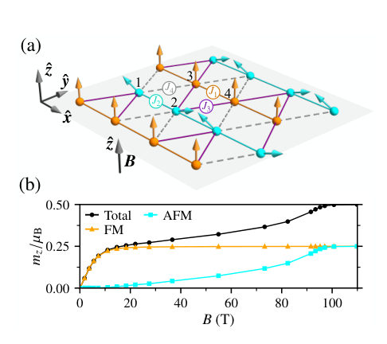
<figcaption class="paper-figure-caption"><b>Fig 1.</b> FIG. 1. (a) Schematic of the two-dimensional model for botal- lackite, consisting of alternating FM (𝐽1) and AFM (𝐽2) Heisenberg spin- 1</figcaption>
</figure>
<figure class="paper-figure-card">
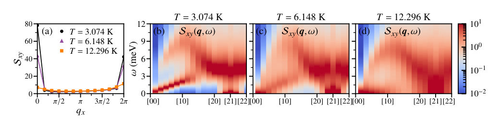
<figcaption class="paper-figure-caption"><b>Fig 2.</b> FIG. 2. (a) Static structure factor for various temperatures at zero magnetic field for a path (𝑞𝑥, 𝑞𝑦) = (0, 𝜋) →(2𝜋, 𝜋). (b)–(d): Dynamical structure factors for the same temperatures at zero magnetic field. 𝒒= [00] corresponds to the total spin. Since this is a conserved quantity, the dynamical structure factor exhibits a Dirac delta peak at 𝜔= 0. We thus leave [00] blank.</figcaption>
</figure>
<figure class="paper-figure-card">
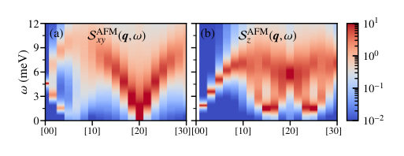
<figcaption class="paper-figure-caption"><b>Fig 3.</b> FIG. 3. Dynamical structure factors of the decoupled AFM chains (i.e., 𝐽3 = 0) at temperature 𝑇= 3.074 K and magnetic field 𝐵= 36.625 T. Since 𝑆𝑧 tot is a conserved quantity, we leave [00] blank similar to Fig. 2.</figcaption>
</figure>
<figure class="paper-figure-card">
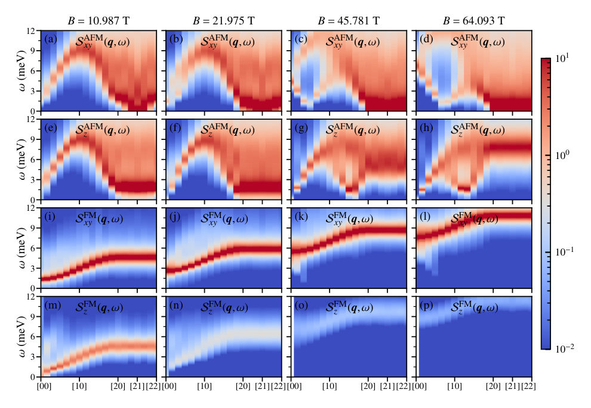
<figcaption class="paper-figure-caption"><b>Fig 4.</b> FIG. 4. Separate contributions from the FM and AFM chains to the dynamical structure factor at temperature 𝑇= 3.074K for various magnetic fields. We leave [00] blank in (o) and (p) as the corresponding imaginary-time correlation functions are within the error bars.</figcaption>
</figure>
<figure class="paper-figure-card">
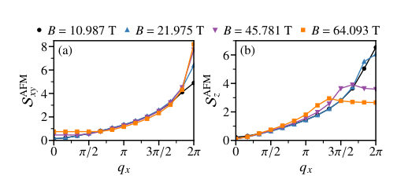
<figcaption class="paper-figure-caption"><b>Fig 5.</b> FIG. 5. Static structure factor of the AFM chains for a path (𝑞𝑥, 𝑞𝑦) = (0, 0) →(2𝜋, 0) for several magnetic fields at 𝑇= 3.074 K. (a) Transverse and (b) longitudinal parts.</figcaption>
</figure>
</div>

<p><strong>Summary.</strong> The paper demonstrates that applying a strong magnetic field can drive dimensional reduction in a 2D quantum antiferromagnet model. By analyzing the system's spin dynamics via QMC simulations, the authors show that interchain correlations are suppressed, causing the low-energy spectrum to map onto that of an isolated 1D Heisenberg chain.</p>
<p><strong>Why it may be interesting.</strong> This work provides a clear example of tuning dimensionality in quantum magnets using external fields, offering measurable spectroscopic signatures (inelastic neutron scattering) for emergent low-dimensional physics.</p>
<details>
<summary>Detailed structure</summary>
<p><strong>Main problem.</strong> The study investigates whether an external magnetic field can induce a dimensional reduction in a quasi-two-dimensional quantum antiferromagnet.</p>
<p><strong>Main result.</strong> Beyond a critical magnetic field, the system's low-energy excitations are predicted to reduce to those of a one-dimensional AFM Heisenberg chain, exhibiting gapless incommensurate spinon fluctuations.</p>
<p><strong>Method.</strong> The research employs Quantum Monte Carlo (QMC) simulations using Abrikosov fermions and compares results with analytical treatments like spin-wave theory and Bethe Ansatz analysis for limits.</p>
<p><strong>Model / system.</strong> The model is a quasi-2D quantum magnet based on the mineral botallackite, featuring alternating ferromagnetic (FM) and antiferromagnetic (AFM) spin-1/2 Heisenberg chains coupled together. The Hamiltonian includes interchain couplings that are tuned by an external magnetic field.</p>
<p><strong>Key observables.</strong> Total magnetization ($M$), dynamical structure factor ($S(\mathbf{Q}, \omega)$), static structure factor, and the evolution of spectral weight in these quantities as a function of $B$ and $T$.</p>
<p><strong>Important parameters / regimes.</strong> The critical magnetic field ($B_c \approx 16	ext{ T}$), temperature ($T$), and the relative strengths of intra-chain vs. inter-chain couplings ($J_2 > J_1 > J_3$).</p>
<p><strong>Assumptions / limitations.</strong> The model simplifies by omitting easy-axis anisotropy and Dzyaloshinskii-Moriya interactions, focusing on SU(2)-symmetric exchange terms.</p>
<p><strong>Figures summary.</strong> Figures illustrate the magnetization curve vs. field (Fig. 1b), and show how the dynamical structure factor evolves from a 2D pattern to one characteristic of decoupled 1D chains at high fields (Figs. 2, 3, 4).</p>
<p><strong>Paper structure.</strong> The paper progresses by first establishing the model and calculating magnetization curves; it then analyzes the spectral weight evolution using QMC simulations across varying magnetic fields, demonstrating the crossover to 1D behavior.</p>
</details>
<details>
<summary>Abstract</summary>
<p>Low dimensionality enhances quantum fluctuations, triggering novel states of quantum matter to emerge. In real materials, low dimensionality usually arises from spatially strongly anisotropic couplings. Here, we demonstrate a different mechanism: in two-dimensional systems with coupled alternating ferromagnetic (FM) and antiferromagnetic (AFM) spin-$1/2$ chains, an applied magnetic field may drive a dimensional reduction. Under magnetic field, the FM chains polarize and stiffen, suppressing the propagation of transverse AFM fluctuations from one chain to another, and effectively induce one-dimensional behavior at low energies. For a model describing botallackite, Cu$_2$(OH)$_3$Br, quantum Monte Carlo dynamics show that beyond a critical magnetic field, the low-energy spectrum reduces to that of a one-dimensional AFM Heisenberg spin-$1/2$ chain with field-dependent incommensurate two-spinon fluctuations, providing clear signatures for inelastic neutron scattering.</p>
</details>
<p><sub><a href="#top">↑ back to top</a></sub></p>

<p><a id="paper-2608.04081"></a></p>
<h3 id="guiding-compiler-optimizations-for-neutral-atom-quantum-computers-through-visualizations"><a href="http://arxiv.org/abs/2608.04081v1">Guiding Compiler Optimizations for Neutral Atom Quantum Computers Through Visualizations</a></h3>
<p><strong>Authors:</strong> Yannick Stade, Robert Wille<br>
<strong>Type:</strong> theory · <strong>Category:</strong> quantum information and computing · <strong>PDF:</strong> <a href="https://arxiv.org/pdf/2608.04081v1">https://arxiv.org/pdf/2608.04081v1</a><br>
<strong>Analysis basis:</strong> full PDF text, analyzed in chunks
<strong>Topic relevance:</strong> <code>QC/QI experiment</code> <strong>2/5</strong> · <code>Rydberg arrays</code> <strong>1/5</strong></p>
<div class="figure-strip-hint">↔ Scroll figures horizontally</div>
<div class="paper-figures-scroll">
<figure class="paper-figure-card">
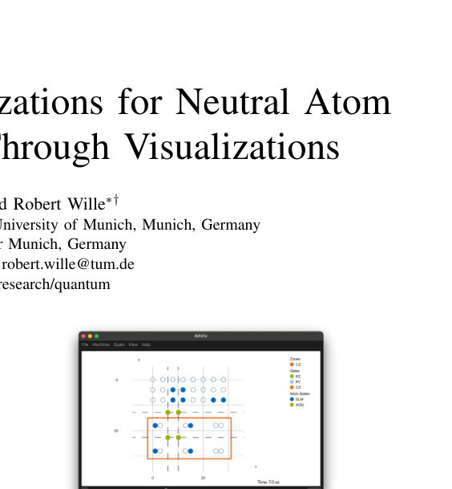
<figcaption class="paper-figure-caption"><b>Fig 1.</b> Figure 1. Screenshot of the visualization app NAViz while animating a quantum computation on an NA device.</figcaption>
</figure>
<figure class="paper-figure-card">
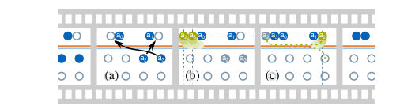
<figcaption class="paper-figure-caption"><b>Fig 2.</b> Figure 2. The black arrows in Fig. 2a indicate the desired rearrangement of two atoms. Figure 2b depicts the first movement and Fig. 2c the second. The dashed green line in Fig. 2c illustrates the distance traveled by atom a2.</figcaption>
</figure>
</div>

<p><strong>Summary.</strong> This paper tackles the challenge of compiling quantum circuits for large Neutral Atom quantum computers. The authors developed NAViz, a visualization tool, to analyze atom rearrangement strategies. By revealing hidden detours in relaxed movement protocols, they proposed and validated a hybrid compilation strategy that significantly improves performance.</p>
<p><strong>Why it may be interesting.</strong> It directly addresses the practical engineering challenges of scaling quantum hardware by providing diagnostic tools that reveal subtle physical inefficiencies in compilation paths, which is crucial for theoretical modeling of complex quantum architectures.</p>
<details>
<summary>Detailed structure</summary>
<p><strong>Main problem.</strong> The development of automated compilation tools is necessary for large-scale Neutral Atom (NA) quantum computers due to complex hardware trade-offs.</p>
<p><strong>Main result.</strong> A novel hybrid routing strategy was derived that outperforms both strictly constrained and fully relaxed compilation methods by intelligently merging steps when overhead reduction is possible.</p>
<p><strong>Method.</strong> The authors introduced NAViz, a real-time visualization tool, to empirically test and diagnose inefficiencies in existing quantum computation compilation strategies for NA devices.</p>
<p><strong>Model / system.</strong> The system involves Neutral Atom (NA) quantum computers utilizing optical tweezers for qubit placement and rearrangement. Compilation requires managing physical constraints on atom movement (placement and routing).</p>
<p><strong>Key observables.</strong> Rearrangement time (T) for various quantum benchmarks like graphstate or QFT.</p>
<p><strong>Important parameters / regimes.</strong> The trade-off between strict vs. relaxed routing constraints, which govern relative order maintenance during atomic rearrangement.</p>
<p><strong>Assumptions / limitations.</strong> Initially assumed that relaxing movement constraints would improve performance; visualization proved this assumption false by revealing physical detours.</p>
<p><strong>Figures summary.</strong> Figure 1 shows NAViz visualizing computation steps (static/rearranging atoms). Figure 2 illustrates an inefficient detour path during relaxed routing. Table I compares rearrangement times for Strict, Relaxed, and Hybrid strategies.</p>
<p><strong>Paper structure.</strong> The paper identifies the need for compilation tools, introduces NAViz to visualize NA computations, analyzes different routing constraints (strict vs. relaxed), diagnoses performance bottlenecks using visualization, and concludes by proposing and validating a superior hybrid strategy.</p>
</details>
<details>
<summary>Abstract</summary>
<p>The scale of Neutral Atom (NA) quantum computers requires automated compilation tools. Designing the required heuristic methods demands a deep understanding of complex hardware trade-offs, for which visualizations can provide crucial insights. This work introduces NAViz, the first publicly available app to visualize quantum computations on NA devices in real-time. A case study demonstrates how NAViz was instrumental in identifying and resolving inefficiencies in an existing compilation strategy, leading to a new, more performant one. The tool is available as part of the Munich Quantum Toolkit (MQT) at https://github.com/munich-quantum-toolkit/naviz.</p>
</details>
<p><sub><a href="#top">↑ back to top</a></sub></p>

<p><a id="paper-2608.05092"></a></p>
<h3 id="perfect-games-in-dimension-bounded-communication"><a href="http://arxiv.org/abs/2608.05092v1">Perfect Games in Dimension-Bounded Communication</a></h3>
<p><strong>Authors:</strong> E. Zambrini Cruzeiro<br>
<strong>Type:</strong> theory · <strong>Category:</strong> quantum information and computing · <strong>PDF:</strong> <a href="https://arxiv.org/pdf/2608.05092v1">https://arxiv.org/pdf/2608.05092v1</a><br>
<strong>Analysis basis:</strong> full PDF text, analyzed in chunks
<strong>Topic relevance:</strong> <code>entanglement &amp; information structure</code> <strong>2/5</strong> · <code>quantum measurements</code> <strong>1/5</strong></p>
<div class="figure-strip-hint">↔ Scroll figures horizontally</div>
<div class="paper-figures-scroll">
<figure class="paper-figure-card">
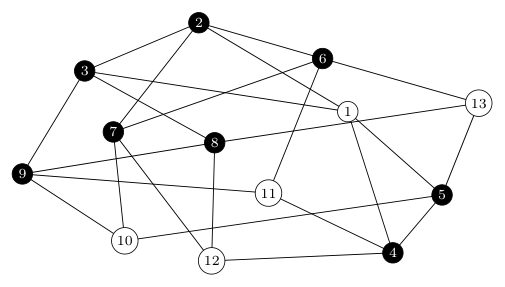
<figcaption class="paper-figure-caption"><b>Fig 1.</b> FIG. 1. An abstract drawing of the orthogonality graph G13. Vertex positions are chosen solely for readability and do not represent the coordinates of the rays in Eq. (39). Filled vertices form the tested set T8 = {2, 3, 4, 5, 6, 7, 8, 9}. Its five untested vertices form a maximum independent set, so T8 is a minimum vertex cover.</figcaption>
</figure>
</div>

<p><strong>Summary.</strong> This paper rigorously analyzes 'perfect games' in dimension-bounded quantum communication settings. It establishes that the ability to perfectly distinguish between quantum and classical strategies depends on comparing graph invariants like chromatic number ($\chi$) against a quantum measure ($\xi_C$). The work provides concrete examples showing genuine quantum advantage where $\xi_C < \chi$, connecting quantum physics directly to extremal combinatorics.</p>
<p><strong>Why it may be interesting.</strong> It provides deep connections between fundamental concepts in quantum information theory (contextuality, state exclusion) and classical combinatorial optimization problems (graph coloring), which is highly relevant for understanding resource limitations in quantum communication protocols.</p>
<details>
<summary>Detailed structure</summary>
<p><strong>Main problem.</strong> The paper investigates perfect prepare-and-measure (PM) games to establish structural relationships between quantum advantage, classical communication complexity, and graph theory invariants.</p>
<p><strong>Main result.</strong> It provides a complete characterization for binary-output support games, showing that the existence of a perfect quantum strategy is equivalent to a condition involving the complex orthogonal rank ($\xi_C$), which can be strictly weaker than the chromatic number ($\chi$) required for classical realization.</p>
<p><strong>Method.</strong> The analysis relies on translating physical constraints (perfect winning sets) into graph-theoretic problems, comparing bounds derived from quantum information theory (e.g., orthogonal representations) against classical combinatorial measures (like graph coloring).</p>
<p><strong>Model / system.</strong> The model is the prepare-and-measure experiment involving Alice encoding an input $x$ into a system of dimension $d$, sending it to Bob for measurement based on $y$. The core mathematical structure analyzed is the conflict graph $\Gamma_G$ derived from the game's winning constraints.</p>
<p><strong>Key observables.</strong> Chromatic number ($\chi$), complex orthogonal rank ($\xi_C$), classical upper bound ($SG,T$), and quantum values ($Q_d$).</p>
<p><strong>Important parameters / regimes.</strong> The dimension $d$ of the quantum system (e.g., qubit $d=2$, qutrit $d=3$), and graph invariants like edge biclique-cover number.</p>
<p><strong>Assumptions / limitations.</strong> The analysis focuses specifically on 'perfect' winning constraints, implying zero-error information theory requirements for both classical and quantum strategies.</p>
<p><strong>Figures summary.</strong> Not specified in detail, but the notes reference tables summarizing perfect PM games with calculated values ($ ext{C}_3,   ext{Q}_3, S$) and explicit colorings for graph deletions.</p>
<p><strong>Paper structure.</strong> The paper proceeds by first defining the framework of support games and establishing necessary conditions (Proposition 1). It then presents the main characterization theorems linking quantum/classical existence to graph parameters ($\chi$ vs. $\xi_C$). Finally, it applies these results to complex examples like the 13-ray qutrit graph and nonbinary tasks like Torpedo loss.</p>
</details>
<details>
<summary>Abstract</summary>
<p>Perfect prepare-and-measure games exhibit an all-or-nothing quantum advantage: a quantum system of dimension $d$ satisfies every prescribed winning constraint, whereas a classical $d$-level message cannot. We establish two structural results for such forbidden-output support constraints. First, every binary-output support game reduces exactly to a conflict graph: perfect classical realization with a $d$-level message is equivalent to $d$-colorability, perfect $d$-dimensional quantum realization is equivalent to a $d$-dimensional orthogonal representation, and the minimum number of Bob inputs realizing a fixed conflict graph is its edge biclique-cover number. Second, for an arbitrary finite output alphabet, every perfect qubit strategy admits a perfect classical-bit realization. As a flagship application, the $13$-ray qutrit graph yields a compressed game $(X,Y,B)=(13,8,2)$ with $C_3=39<Q_3=S=40$, and eight Bob inputs are minimal among all binary-output realizations of that graph. Graph extensions demonstrate the mechanism in every dimension, while Torpedo and antidistinguishability games illustrate the genuinely nonbinary regime. These results connect exact communication, graph coloring, contextuality, state exclusion, and zero-error information theory.</p>
</details>
<p><sub><a href="#top">↑ back to top</a></sub></p>

<p><a id="paper-2608.04248"></a></p>
<h3 id="tilts-from-2-groups"><a href="http://arxiv.org/abs/2608.04248v1">Tilts from 2-Groups</a></h3>
<p><strong>Authors:</strong> Sven Harder, Theodore Jacobson, Zhengdi Sun<br>
<strong>Type:</strong> theory · <strong>Category:</strong> other · <strong>PDF:</strong> <a href="https://arxiv.org/pdf/2608.04248v1">https://arxiv.org/pdf/2608.04248v1</a><br>
<strong>Analysis basis:</strong> full PDF text, analyzed in chunks
<strong>Topic relevance:</strong> <code>Keldysh / 2PI / non-Gaussian methods</code> <strong>1/5</strong> · <code>analog quantum simulation</code> <strong>1/5</strong> · <code>correlated / nonlocal dissipation</code> <strong>1/5</strong> · <code>driven-dissipative phase transition</code> <strong>1/5</strong> · <code>entanglement &amp; information structure</code> <strong>1/5</strong> · <code>methods for driven-dissipative</code> <strong>1/5</strong> · <code>non-equilibrium dynamics</code> <strong>1/5</strong> · <code>non-equilibrium universality</code> <strong>1/5</strong></p>
<div class="figure-strip-hint">↔ Scroll figures horizontally</div>
<div class="paper-figures-scroll">
<figure class="paper-figure-card">
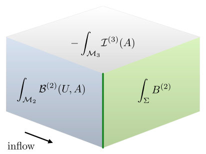
<figcaption class="paper-figure-caption"><b>Fig 1.</b> Figure 1: The anomalous transformation of a charged line operator on γ attached to a</figcaption>
</figure>
<figure class="paper-figure-card">
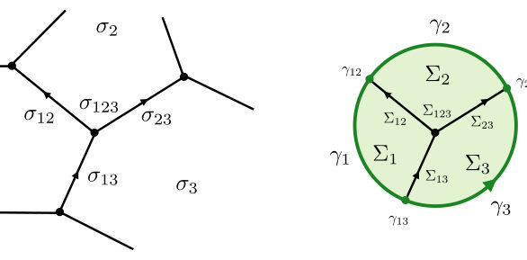
<figcaption class="paper-figure-caption"><b>Fig 2.</b> Figure 2: An example of a triple intersection of patches. The orientation of each region</figcaption>
</figure>
<figure class="paper-figure-card">
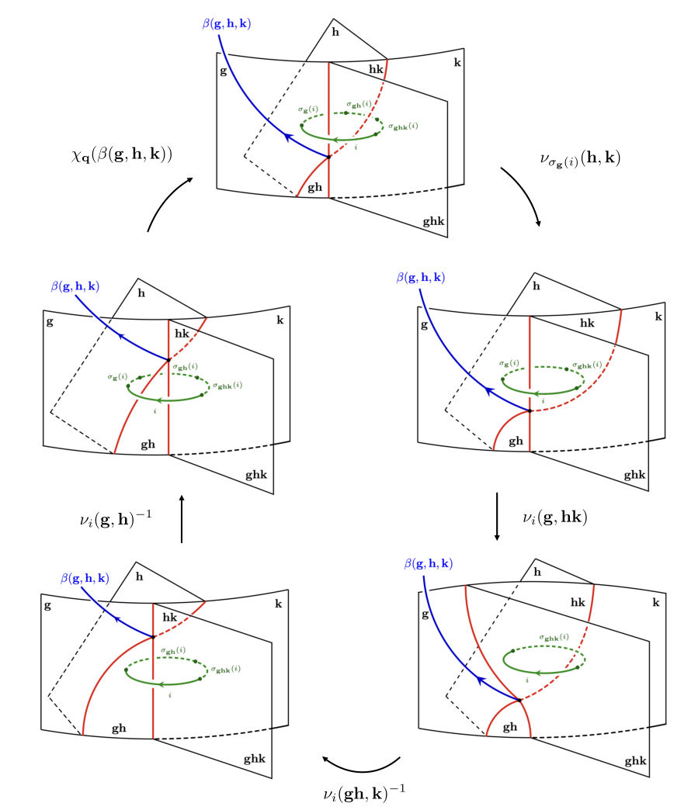
<figcaption class="paper-figure-caption"><b>Fig 3.</b> Figure 3: Derivation of the consistency condition (4.10) by the above topological manip-</figcaption>
</figure>
</div>

<p><strong>Summary.</strong> This theoretical paper investigates how 2-group global symmetries constrain line operators (defects) within Quantum Field Theories. The core finding is that these charged lines must explicitly break the system's primary symmetry, a constraint formalized by a 'family anomaly.' The authors use advanced mathematical tools like generalized anomaly inflow to prove this result across various types of symmetry groups.</p>
<p><strong>Why it may be interesting.</strong> While highly abstract, the concepts of higher symmetries, topological defects, and anomaly matching are fundamental to understanding emergent order and stability in strongly interacting quantum systems, which has parallels with correlated electron physics.</p>
<details>
<summary>Detailed structure</summary>
<p><strong>Main problem.</strong> The paper analyzes how global symmetries described by 2-groups constrain line operators (defects) charged under the 1-form subgroup of these symmetries.</p>
<p><strong>Main result.</strong> It shows that such line operators generically break the underlying 0-form symmetry, leading to a family of defects whose existence is protected by a 'family anomaly' invariant under RG flow.</p>
<p><strong>Method.</strong> The analysis employs advanced tools including the Wess-Zumino consistency condition, generalized anomaly inflow formalisms for defects, and differential cohomology techniques depending on whether the 2-group is continuous abelian, nonabelian, or discrete.</p>
<p><strong>Model / system.</strong> The study applies to Quantum Field Theories (QFTs) possessing 2-group global symmetries, examining constraints in both continuous and discrete settings. The focus is on the interplay between bulk symmetry ($G(0)$) and defect structure ($A(1)$).</p>
<p><strong>Key observables.</strong> Family anomaly (topological obstruction), tilt operator (linear response to broken symmetry), and constrained correlation functions (e.g., 3-point functions).</p>
<p><strong>Important parameters / regimes.</strong> The nature of the 2-group (abelian, nonabelian, discrete) dictates which mathematical tools are required for the consistency checks.</p>
<p><strong>Assumptions / limitations.</strong> The argument for symmetry breaking is presented as being 'completely kinematic,' meaning it holds regardless of whether the bulk theory is a CFT or if the symmetry is spontaneously broken.</p>
<p><strong>Paper structure.</strong> The paper develops its argument by first establishing the general constraints using anomaly inflow, then detailing specific mathematical machinery for continuous abelian/nonabelian groups (differential cohomology), and finally addressing the discrete case via defect associativity.</p>
</details>
<details>
<summary>Abstract</summary>
<p>2-group global symmetries intertwine 0-form and 1-form symmetries in an interesting way. We analyze universal constraints on lines which are charged under the 1-form subgroup of a 2-group, and show that they generically break the 0-form symmetry explicitly. This gives rise to a family of line defects parameterized by the broken symmetry generators, whose existence is invariant under the renormalization group flow of the bulk-defect system. The symmetry breaking is enforced by a `family anomaly,' which is a topological obstruction to a symmetric defect. Our main tools are the Wess-Zumino consistency condition and a generalized anomaly inflow formalism for defects and boundaries. For nonabelian continuous 2-groups the family anomaly stems from a higher Berry connection on the moduli space of defects, and constrains response functions that probe the local action of the broken symmetry. In the continuous abelian case we apply differential cohomology to the 2-group background fields to uncover a subtle generalization of the Wess-Zumino condition, while in the discrete case we recast it in terms of the associativity of symmetry defects. We give numerous illustrative examples, computing when possible explicit forms of the tilt operator (which probes the linear response of the defect to the broken symmetry) and its higher analogs, which are crucial for matching the family anomaly. We also discuss universal features such as how symmetry violation by charged line defects is related to symmetry breaking hierarchies in the bulk, and highlight a number of subtle points including the distinction between simple and non-simple lines, and Postnikov class resolution.</p>
</details>
<p><sub><a href="#top">↑ back to top</a></sub></p>

<p><a id="paper-2608.04953"></a></p>
<h3 id="diffusive-speed-limits-for-u1-covariant-quantum-error-correction"><a href="http://arxiv.org/abs/2608.04953v1">Diffusive Speed Limits for U(1)-Covariant Quantum Error Correction</a></h3>
<p><strong>Authors:</strong> Jianqi Sheng<br>
<strong>Type:</strong> theory · <strong>Category:</strong> quantum information and computing · <strong>PDF:</strong> <a href="https://arxiv.org/pdf/2608.04953v1">https://arxiv.org/pdf/2608.04953v1</a><br>
<strong>Analysis basis:</strong> full PDF text, analyzed in chunks
<strong>Topic relevance:</strong> <code>correlated / nonlocal dissipation</code> <strong>1/5</strong> · <code>driven-dissipative phase transition</code> <strong>1/5</strong> · <code>entanglement &amp; information structure</code> <strong>1/5</strong> · <code>methods for driven-dissipative</code> <strong>1/5</strong> · <code>non-equilibrium dynamics</code> <strong>1/5</strong></p>
<div class="figure-strip-hint">↔ Scroll figures horizontally</div>
<div class="paper-figures-scroll">
<figure class="paper-figure-card">
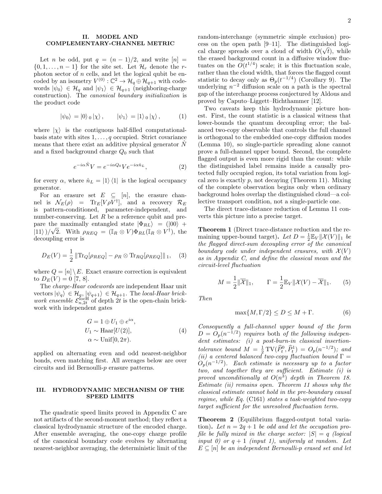
<figcaption class="paper-figure-caption"><b>Fig 1.</b> Low-resolution page preview, page 2</figcaption>
</figure>
<figure class="paper-figure-card">
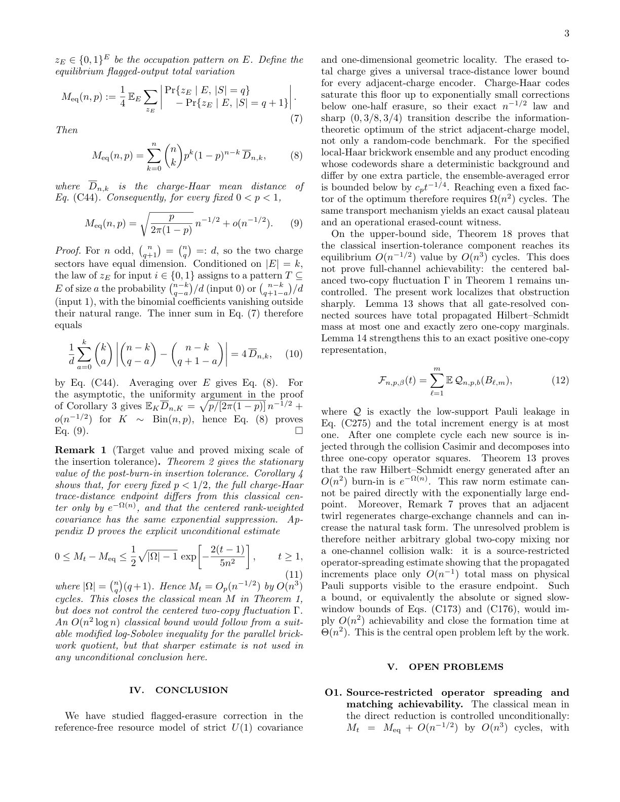
<figcaption class="paper-figure-caption"><b>Fig 2.</b> Low-resolution page preview, page 3</figcaption>
</figure>
<figure class="paper-figure-card">
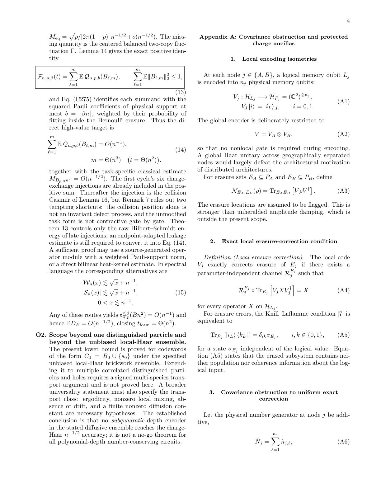
<figcaption class="paper-figure-caption"><b>Fig 3.</b> Low-resolution page preview, page 4</figcaption>
</figure>
<figure class="paper-figure-card">
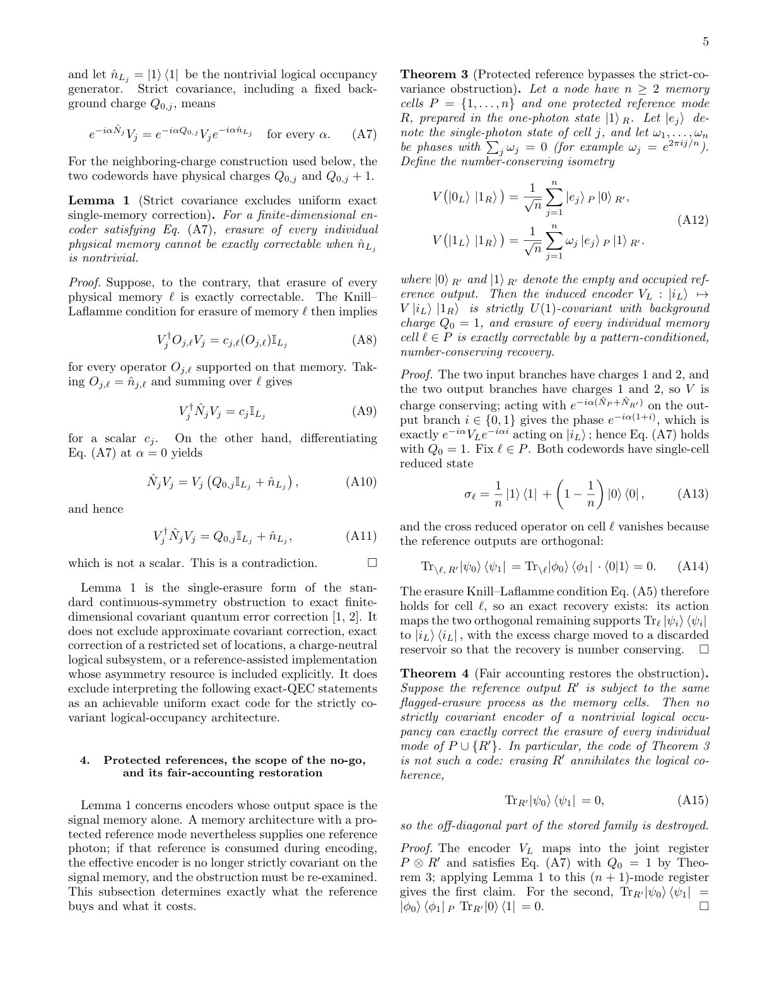
<figcaption class="paper-figure-caption"><b>Fig 4.</b> Low-resolution page preview, page 5</figcaption>
</figure>
<figure class="paper-figure-card">
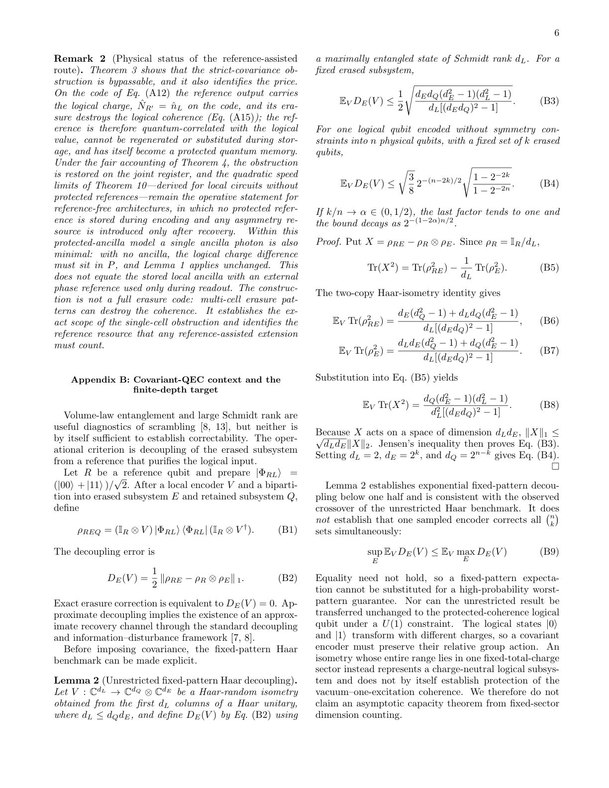
<figcaption class="paper-figure-caption"><b>Fig 5.</b> Low-resolution page preview, page 6</figcaption>
</figure>
</div>

<p><strong>Summary.</strong> This work establishes the theoretical speed limit for performing Quantum Error Correction codes under strict U(1) charge conservation. By analyzing error metrics using advanced mathematical techniques, the authors prove that diffusion processes impose a quadratic ($\Omega(n^2)$) lower bound on how fast these codes can be prepared. This identifies diffusion itself as the fundamental operational bottleneck in symmetry-constrained quantum information processing.</p>
<p><strong>Why it may be interesting.</strong> It provides a deep connection between fundamental physical constraints (like charge conservation/U(1) symmetry) and computational resource limits (encoding time), which is crucial for designing scalable quantum memory architectures.</p>
<details>
<summary>Detailed structure</summary>
<p><strong>Main problem.</strong> The research determines the fundamental diffusive speed limits governing U(1)-covariant Quantum Error Correction (QEC) when subjected to flagged erasures.</p>
<p><strong>Main result.</strong> Diffusion of the logical charge enforces an $\Omega(n^2)$ lower bound on the encoding time for local number-conserving circuits, establishing diffusion as a key operational limit in symmetry-constrained quantum coding.</p>
<p><strong>Method.</strong> The analysis combines exact complementary-channel geometry, charge-sector Haar analysis, and gate-resolved connected-moment expansions to derive rigorous bounds on error metrics.</p>
<p><strong>Model / system.</strong> The system models one-dimensional arrays of nearest-neighbor coupled cells encoding a logical qubit under strict U(1) covariance. The study focuses on Charge-Haar codes and local brickwork ensembles.</p>
<p><strong>Key observables.</strong> Decoupling Error ($DE(V)$), classical mean ($M_t$), centered two-copy fluctuation ($\Gamma$), and the total variation distance ($ ext{dTV}$).</p>
<p><strong>Important parameters / regimes.</strong> The scaling laws are characterized by $n^{-1/2}$ for equilibrium error bounds, $\Omega(n^2)$ for time lower bounds, and $O(n^3)$ for classical mixing bounds.</p>
<p><strong>Assumptions / limitations.</strong> Key assumptions include the strict adherence to U(1) covariance and the analysis being restricted initially to single-distinguished-particle classes or specific local ensembles.</p>
<p><strong>Paper structure.</strong> The paper progresses by first establishing the information-theoretic optimum for charge-Haar codes, then deriving dynamical bounds using moment expansions, identifying diffusion as the bottleneck, and finally relating this to mixing times in random lattice processes.</p>
</details>
<details>
<summary>Abstract</summary>
<p>Fast preparation of quantum error-correcting codes is essential for scalable quantum memories, but geometric locality and $U(1)$ charge conservation impose an unavoidable transport constraint. We combine exact complementary-channel geometry, charge-sector Haar analysis, and a gate-resolved connected-moment expansion to study one-dimensional covariant encoders under flagged erasure. Charge-Haar codes attain the universal adjacent-charge lower bound up to exponentially small corrections, yielding an exact $n^{-1/2}$ extensive-erasure law and a sharp half-erasure transition. For local number-conserving brickwork circuits, diffusion of the logical charge enforces an $Ω(n^2)$ encoding-time lower bound; we also prove an $O(n^3)$ mixing bound for the classical component and reduce the remaining full-channel upper bound to a source-restricted low-support operator-spreading problem. These results identify diffusion as an operational limit on symmetry-constrained quantum coding and establish a route to its exact formation time.</p>
</details>
<p><sub><a href="#top">↑ back to top</a></sub></p>

<p><a id="paper-2608.05071"></a></p>
<h3 id="generalized-comodule-tube-algebras-for-boundary-and-domain-wall-defects-of-21d-topological-order"><a href="http://arxiv.org/abs/2608.05071v1">Generalized comodule tube algebras for boundary and domain wall defects of (2+1)D topological order</a></h3>
<p><strong>Authors:</strong> Zhian Jia, Sheng Tan<br>
<strong>Type:</strong> theory · <strong>Category:</strong> strongly correlated electrons · <strong>PDF:</strong> <a href="https://arxiv.org/pdf/2608.05071v1">https://arxiv.org/pdf/2608.05071v1</a><br>
<strong>Analysis basis:</strong> full PDF text, analyzed in chunks
<strong>Topic relevance:</strong> <code>Keldysh / 2PI / non-Gaussian methods</code> <strong>1/5</strong> · <code>analog quantum simulation</code> <strong>1/5</strong> · <code>driven-dissipative phase transition</code> <strong>1/5</strong> · <code>methods for driven-dissipative</code> <strong>1/5</strong></p>
<div class="figure-strip-hint">↔ Scroll figures horizontally</div>
<div class="paper-figures-scroll">
<figure class="paper-figure-card">
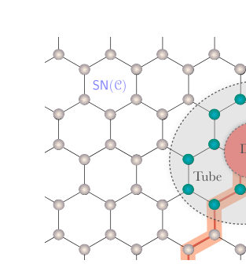
<figcaption class="paper-figure-caption"><b>Fig 1.</b> Figure 1. The point defect (disk region) connects two domain walls described by the C|D-bimodule categories M and N, with tube regions surrounding the defect.</figcaption>
</figure>
<figure class="paper-figure-card">

<figcaption class="paper-figure-caption"><b>Fig 2.</b> Figure 2. Defects corresponding to gapped boundaries, gapped domain walls, and multimodule domain walls. Fusion between defects, boundary charges, and domain wall charges occurs in one dimension, such that the direction of fusion plays a critical role.</figcaption>
</figure>
<figure class="paper-figure-card">

<figcaption class="paper-figure-caption"><b>Fig 3.</b> Figure 3. General configuration of defects in a two-dimensional topological phase. A codimension-2 N-defect may connect N codimension-1 defects. By considering the tube surrounding the N-defect, one obtains the associated multicomodule defect tube algebra.</figcaption>
</figure>
<figure class="paper-figure-card">

<figcaption class="paper-figure-caption"><b>Fig 4.</b> Figure 4. (a) Schematic representation of an N-defect. The central defect is attached to N domain walls labeled by bimodule categories Mi, arranged cyclically around the defect. The region between two adjacent domain walls Mi and Mi+1 is labeled by the fusion category Ci,i+1, with indices understood modulo N. (b) Fusion of two adjacent domain walls Mi−1 and Mi. Here Mi−1 carries a right Ci−1,i-module structure and Mi carries a left Ci−1,i-module structure, so the two domain walls can be fused along the intermediate fusion category Ci−1,i via Deligne tensor product, producing a Ci−2,i−1|Ci,i+1 domain wall Mi−1 ⊠Ci−1,i Mi.</figcaption>
</figure>
</div>

<p><strong>Summary.</strong> This paper develops an advanced algebraic formalism to characterize topological defects, such as domain walls, in 2D gapped quantum systems. It generalizes the concept of 'tube algebras' by showing that these defects are governed by comodule algebras rather than simple Hopf structures. This provides a powerful mathematical tool for classifying and understanding exotic excitations beyond simple point defects.</p>
<p><strong>Why it may be interesting.</strong> This work provides a rigorous mathematical framework connecting abstract algebraic structures (comodule/multicomodule algebras) directly to physical concepts in condensed matter theory like topological order and defect physics, which is highly relevant for understanding emergent quantum phenomena.</p>
<details>
<summary>Detailed structure</summary>
<p><strong>Main problem.</strong> The work generalizes the tube algebra framework from characterizing bulk topological excitations to describing codimension-2 defects, such as domain walls, in (2+1)D gapped phases.</p>
<p><strong>Main result.</strong> These defects are characterized by a 'defect tube algebra,' which naturally possesses the structure of a comodule algebra over the weak Hopf tube algebra associated with the bulk topological order.</p>
<p><strong>Method.</strong> The authors employ advanced algebraic techniques, specifically utilizing comodule algebras and multicomodule algebras to classify defect structures arising from Turaev-Viro-Barrett-Westbury TQFTs.</p>
<p><strong>Model / system.</strong> The theory applies to topological phases in (2+1)D, particularly those modeled by Levin-Wen string-net models. The focus is on the algebraic description of defects connecting multiple bulk phases.</p>
<p><strong>Key observables.</strong> The representations of the defect tube algebras are used to characterize the boundary and domain wall defects.</p>
<p><strong>Important parameters / regimes.</strong> Codimension of the defect (2 for domain walls), number of adjacent phases ($N$), and the underlying unitary modular tensor category ($\mathcal{Z}(\mathcal{C})$).</p>
<p><strong>Assumptions / limitations.</strong> The primary assumption is that defects are not fusion-closed, necessitating the use of a comodule structure rather than a simple coproduct.</p>
<p><strong>Figures summary.</strong> Figure 1 illustrates how a point defect connects two domain walls described by bimodules $\mathcal{M}$ and $\mathcal{N}$, showing the surrounding tube regions.</p>
<p><strong>Paper structure.</strong> The paper builds upon the known bulk theory (tube algebra as weak Hopf algebra) and extends it systematically to defects, defining the comodule structure for codimension-2 defects, and generalizing this to $N$-tuple and multicomodule algebras for higher defects.</p>
</details>
<details>
<summary>Abstract</summary>
<p>The tube algebra, which carries the structure of a $C^*$ weak Hopf algebra, is a fundamental tool for characterizing topological excitations in topological phases. In this work, we generalize the tube algebra framework to codimension-2 defects in $(2+1)$D gapped phases described by Turaev--Viro--Barrett--Westbury TQFTs, with particular emphasis on Levin--Wen string-net models. We show that such codimension-2 defects are described by a \emph{defect tube algebra}, which naturally carries the structure of a comodule algebra over the weak Hopf tube algebra associated with the topological excitations. Boundary and domain wall defects are then characterized by the representations of the corresponding boundary and domain wall defect tube algebras. In particular, a domain wall defect tube algebra can be regarded as a generalized Drinfeld double of the tube algebras associated with the two adjacent boundary defects. More generally, for a domain wall joining $N$ bulk phases, the associated domain wall defect tube algebra can be viewed as an $N$-tuple algebra. This perspective extends naturally to general $k$-defects, namely codimension-2 defects joining $k$ codimension-1 defects, for which the resulting generalized tube algebra carries the structure of a multicomodule algebra.</p>
</details>
<p><sub><a href="#top">↑ back to top</a></sub></p>

<p><a id="paper-2608.05110"></a></p>
<h3 id="representational-separation-between-unitary-and-channel-quantum-generative-models-via-shared-classical-randomness-at-shallow-depth"><a href="http://arxiv.org/abs/2608.05110v1">Representational separation between unitary and channel quantum generative models via shared classical randomness at shallow depth</a></h3>
<p><strong>Authors:</strong> Arunava Majumder, Marius Krumm, Hendrik Poulsen Nautrup, Hans J. Briegel<br>
<strong>Type:</strong> theory · <strong>Category:</strong> quantum information and computing · <strong>PDF:</strong> <a href="https://arxiv.org/pdf/2608.05110v1">https://arxiv.org/pdf/2608.05110v1</a><br>
<strong>Analysis basis:</strong> full PDF text, analyzed in chunks
<strong>Topic relevance:</strong> <code>driven-dissipative phase transition</code> <strong>1/5</strong> · <code>entanglement &amp; information structure</code> <strong>1/5</strong> · <code>methods for driven-dissipative</code> <strong>1/5</strong></p>
<div class="figure-strip-hint">↔ Scroll figures horizontally</div>
<div class="paper-figures-scroll">
<figure class="paper-figure-card">

<figcaption class="paper-figure-caption"><b>Fig 1.</b> FIG. 1. Long-range correlations from shared classical randomness: For illustration, the figure shows a brickwall-type circuit on N = 6 qubits acting on an input state |ψ⟩, although the mechanism applies to any system size N ≥6. The shaded regions denote the backward light cones of the measured observables ˆZ1 and ˆZ6. (a) In a sufficiently deep (linear depth) local circuit, the two light cones overlap, allowing the circuit to generate a nonzero correlation, Cov( ˆZ1, ˆZ6) = ⟨ˆZ1 ˆZ6⟩−⟨ˆZ1⟩⟨ˆZ6⟩̸= 0. (b) For a shallow local circuit, the light cones remain disjoint. For a product input state, the corresponding expectation values factorize, and hence Cov( ˆZ1, ˆZ6) = 0 for all model...</figcaption>
</figure>
<figure class="paper-figure-card">

<figcaption class="paper-figure-caption"><b>Fig 2.</b> Fig. 1). For example, one brickwall layer may be written as</figcaption>
</figure>
<figure class="paper-figure-card">

<figcaption class="paper-figure-caption"><b>Fig 3.</b> FIG. 2. Quantum circuit Born machines for quan- tum generative modeling: (a) Target distribution Y (x) (usually unknown), from which samples are given, x ∼Y . (b) The learning model applies a parametrized quantum cir- cuit U(θ) to a fixed input state |ψ⟩and measures the re- sulting state in the computational basis. Each circuit execu- tion produces a bit string sampled from the Born distribution x ∼PU(θ). Samples from the target and model distributions are used to evaluate the maximum mean discrepancy (MMD) loss between Y and PU(θ). Gradients are estimated using the parameter-shift rule, after which a classical optimizer up- dates θ 7→θnew. The updated parameters are returned to the quantum...</figcaption>
</figure>
<figure class="paper-figure-card">

<figcaption class="paper-figure-caption"><b>Fig 4.</b> FIG. 3. Learning model with shared randomness: A depth-D one-dimensional nearest-neighbor circuit acts on the product input state |α⟩⊗N. Each parametrized layer Ul(θl) consists of nearest-neighbor Rzz rotations followed by local Rz and Rx rotations. Between layers Ul and Ul+1, a shared clas- sical bit sl ∼Bernoulli(pl) allows the stochastic Pauli string Zsl M to act on a subset M ⊆[1, N] of qubits, such that the lo- cal Z operations are either applied jointly or all omitted. Re- peating the layer structure generates the full depth-D learning model while the Pauli string shown here is inserted only at the designated slot l.</figcaption>
</figure>
<figure class="paper-figure-card">

<figcaption class="paper-figure-caption"><b>Fig 5.</b> FIG. 4. Independent and shared randomness within MBQC: For illustration, we consider a 4 × 3 cluster state, where the first two columns are measured in the XY plane, and the final column forms the readout layer. The corre- sponding circuit representation contains parametrized Rz(θl j) rotations, nearest-neighbor CZ gates, and Hadamard gates. The colored boundary qubits indicate measurement-induced Z byproducts that are either corrected by feedforward or deliberately added through anti-correction, all other qubits are corrected with unit probability. (a) The two boundary qubits are corrected or anti-corrected independently. The corresponding circuit therefore contains independent byprod-</figcaption>
</figure>
</div>

<p><strong>Summary.</strong> The paper proves that incorporating shared classical randomness into shallow quantum generative models provides a provable and scalable advantage over purely unitary models. By generating long-range correlations measurable through covariance, the stochastic channel model can represent distributions unattainable by local unitaries at fixed depths. This has significant implications for understanding the limits of near-term quantum hardware.</p>
<p><strong>Why it may be interesting.</strong> This work provides a concrete, quantifiable demonstration of how non-unitary classical control (shared randomness) can enhance the expressive power of quantum circuits beyond what is achievable by purely unitary evolution at limited depths, which has implications for near-term hardware constraints.</p>
<details>
<summary>Detailed structure</summary>
<p><strong>Main problem.</strong> To determine if shared classical randomness can establish a strict, scalable representational separation between quantum generative models based on shallow local circuits and those augmented with this randomness.</p>
<p><strong>Main result.</strong> Shared classical randomness is sufficient to establish a strict representational separation at shallow depth, allowing the generation of long-range correlations unattainable by purely unitary shallow-depth models.</p>
<p><strong>Method.</strong> The authors compare the output distributions (via covariance measurements) generated by stochastic channel models versus their corresponding purely unitary counterparts. They use total variation distance bounds derived from these observables to prove the separation.</p>
<p><strong>Model / system.</strong> The model uses Quantum Generative Models (QCBMs) based on shallow, bounded-connectivity quantum circuits acting on $N$ qubits. The key modification is augmenting the circuit with spatially separated local Pauli operations controlled by a single shared classical random bit.</p>
<p><strong>Key observables.</strong> Covariance between measurements on distant qubits ($   ext{Cov}(\hat{Z}_1, \hat{Z}_6)$) and the Total Variation distance between the stochastic channel output and the unitary model output.</p>
<p><strong>Important parameters / regimes.</strong> Shallow circuit depth (fixed), system size $N$, and the probability/control mechanism of the shared classical random bit ($s$).</p>
<p><strong>Assumptions / limitations.</strong> The analysis assumes bounded connectivity for the local circuits and relies on specific structural properties of the quantum state evolution under stochastic Pauli operations.</p>
<p><strong>Figures summary.</strong> Figure 1 illustrates that adding shared randomness allows generating non-zero long-range correlations ($   ext{Cov} 
eq 0$) in shallow circuits, which purely unitary models cannot achieve. Figure 7 shows this realization using Measurement-Based Quantum Computation (MBQC).</p>
<p><strong>Paper structure.</strong> The paper establishes the problem by noting limitations of shallow unitaries; it then introduces shared classical randomness as a resource to augment the model; the core is the theoretical proof showing separation via correlation measurements ($  ext{Cov} 
eq 0$); finally, it demonstrates feasibility using MBQC and learning frameworks.</p>
</details>
<details>
<summary>Abstract</summary>
<p>Near-term quantum hardware limits circuit depth and often imposes geometrically local connectivity for quantum generative models, restricting the output distributions accessible to shallow unitary Born models. Introducing stochasticity into a unitary quantum Born model can improve the empirical generative performance of the resulting channel model and, for a restricted small-scale architecture, has been proven to represent a strictly larger family of distributions than its unitary counterpart. However, whether such randomness provides a provable separation at fixed shallow depth for arbitrarily large systems has remained open. Here, we show that shared classical randomness, a comparatively weak resource from entanglement theory, is sufficient to establish such a strict scalable representational separation over the corresponding shallow unitary Born model. More specifically, we augment bounded-connectivity shallow unitary circuits, followed by computational-basis measurements, with spatially separated local Pauli operations, whose joint application is controlled by a single classically sampled random bit. The resulting shallow-depth channel model generates long-range correlations in the classical output distribution that no purely unitary shallow-depth model with bounded connectivity can reproduce. For one-dimensional nearest-neighbour architectures, reproducing such distributions with a purely unitary model can require depth $Ω(N)$ in the worst case. We further show that measurement-based quantum computation (MBQC) provides a natural implementation of the required shared classical randomness through suitable adaptation of the random measurement outcomes. Numerical experiments on MBQC-based generative models support the analytical results.</p>
</details>
<p><sub><a href="#top">↑ back to top</a></sub></p>

<p><a id="paper-2608.04403"></a></p>
<h3 id="information-locality-of-a-quantum-locally-recoverable-code"><a href="http://arxiv.org/abs/2608.04403v1">Information locality of a quantum locally recoverable code</a></h3>
<p><strong>Authors:</strong> Ryutaroh Matsumoto<br>
<strong>Type:</strong> theory · <strong>Category:</strong> quantum information and computing · <strong>PDF:</strong> <a href="https://arxiv.org/pdf/2608.04403v1">https://arxiv.org/pdf/2608.04403v1</a><br>
<strong>Analysis basis:</strong> full PDF text, analyzed in chunks
<strong>Topic relevance:</strong> <code>entanglement &amp; information structure</code> <strong>1/5</strong> · <code>quantum measurements</code> <strong>1/5</strong></p>
<div class="figure-strip-hint">↔ Scroll figures horizontally</div>
<div class="paper-figures-scroll">
<figure class="paper-figure-card">

<figcaption class="paper-figure-caption"><b>Fig 1.</b> Low-resolution page preview, page 2</figcaption>
</figure>
<figure class="paper-figure-card">

<figcaption class="paper-figure-caption"><b>Fig 2.</b> Low-resolution page preview, page 3</figcaption>
</figure>
<figure class="paper-figure-card">

<figcaption class="paper-figure-caption"><b>Fig 3.</b> Low-resolution page preview, page 4</figcaption>
</figure>
<figure class="paper-figure-card">

<figcaption class="paper-figure-caption"><b>Fig 4.</b> Low-resolution page preview, page 5</figcaption>
</figure>
<figure class="paper-figure-card">

<figcaption class="paper-figure-caption"><b>Fig 5.</b> Low-resolution page preview, page 6</figcaption>
</figure>
</div>

<p><strong>Summary.</strong> This paper introduces a refined concept called 'information locality' for Quantum Error-Correcting Codes (QECCs) to improve upon existing overestimations of required resources for erasure correction. Using advanced linear algebra on code subspaces, the authors derive constructive methods and prove that their proposed measure yields tighter bounds than previous quantum locality definitions. This work is vital for designing efficient and resource-aware fault-tolerant quantum computation protocols.</p>
<p><strong>Why it may be interesting.</strong> It advances the theoretical understanding of fault-tolerance in quantum computation by refining the metrics used to quantify local error correction capabilities, which is crucial for building scalable quantum hardware.</p>
<details>
<summary>Detailed structure</summary>
<p><strong>Main problem.</strong> The paper aims to develop a quantum counterpart of 'information locality' for Quantum Error-Correcting Codes (QECCs) to provide a more accurate measure of the necessary codeword symbols required for erasure correction than existing methods.</p>
<p><strong>Main result.</strong> The proposed information locality definition is shown to be superior to previous definitions by providing tighter bounds, although limitations exist when applying it to general QECCs beyond stabilizer codes.</p>
<p><strong>Method.</strong> The authors use linear algebraic procedures involving punctured and shortened code constructions ($\pi_J(C)$ and $\sigma_J(C^{\perp} \otimes h)$) to derive and compare different locality parameters for quantum stabilizer codes.</p>
<p><strong>Model / system.</strong> The study focuses on Quantum Error-Correcting Codes (QECCs), specifically stabilizer codes $Q(C)$, which are complex subspaces of the tensor product Hilbert space $\mathcal{H}^{\otimes n}_{\mathbb{C}_q}$. The analysis involves local measurements and recovery procedures.</p>
<p><strong>Key observables.</strong> Locality parameters $(r, \delta)$; dimension of punctured/shortened codes ($\dim \pi_J(C)$); minimum Hamming weights ($w_H$); quantum local distance ($\delta_Q$).</p>
<p><strong>Important parameters / regimes.</strong> Code length $n$, code dimension $k$; field size $q$; locality parameters $(r, \delta)$.</p>
<p><strong>Assumptions / limitations.</strong> The analysis often relies on the structure of stabilizer codes and specific linear algebraic decompositions; limitations are noted when assuming general QECCs or when comparing classical vs. quantum settings.</p>
<p><strong>Paper structure.</strong> The paper reviews classical locality definitions, proposes a quantum information locality based on punctured code dimensions, develops constructive proofs (Propositions 1 and 7) to compute the required repair group size, compares this new measure against symbol locality, and finally discusses limitations using counterexamples.</p>
</details>
<details>
<summary>Abstract</summary>
<p>A classical linear code $C$ of length $n$ is said to have symbol locality $(r, δ)$ if for any index $j$ there exists a repair group $J_j \subseteq \{1, \ldots, n\}$ with $j\in J_j$ and $|J_j| \leq r+δ-1$ such that any $δ-1$ or fewer erasures in $J_j$ can be corrected by using codeword symbols only in $J_j$. Later it turned out that this way of defining $r$ overestimates the number of necessary codeword symbols for multiple-erasure correction, and information locality was proposed to define $r$ as the dimension of the punctured code of $C$ onto $J_j$. Recently locality $(r,δ)$ was proposed for quantum error-correcting codes by following the original definition of symbol locality $(r, δ)$. We propose a quantum counterpart of the information locality for quantum stabilizer codes constructed by Hermitian orthogonality, and a linear algebraic procedure computing a smaller repair group predicted by the proposed information locality and simultaneously reducing the number of measured observables in decoding to its minimum possible value. Then we demonstrate that the previously proposed definition of quantum locality $(r,δ)$ has the same drawback of overestimating the number of necessary codeword symbols for erasure correction by providing an explicit example of a quantum stabilizer code. Finally, we will give another example of a quantum stabilizer code constructed by Euclidean orthogonality and two different linear codes, with which a natural translation of the classical information locality into the quantum setting underestimates the number of necessary codeword symbols for erasure correction.</p>
</details>
<p><sub><a href="#top">↑ back to top</a></sub></p>

<p><a id="paper-2608.05038"></a></p>
<h3 id="symbol-oriented-quantum-communication-via-temporal-mode-multiplexing"><a href="http://arxiv.org/abs/2608.05038v1">Symbol-Oriented Quantum Communication via Temporal-Mode Multiplexing</a></h3>
<p><strong>Authors:</strong> Ali Vahedi, Parsa Mahdavifar<br>
<strong>Type:</strong> theory · <strong>Category:</strong> quantum information and computing · <strong>PDF:</strong> <a href="https://arxiv.org/pdf/2608.05038v1">https://arxiv.org/pdf/2608.05038v1</a><br>
<strong>Analysis basis:</strong> full PDF text, analyzed in chunks
<strong>Topic relevance:</strong> <code>entanglement &amp; information structure</code> <strong>1/5</strong> · <code>quantum measurements</code> <strong>1/5</strong></p>
<div class="figure-strip-hint">↔ Scroll figures horizontally</div>
<div class="paper-figures-scroll">
<figure class="paper-figure-card">

<figcaption class="paper-figure-caption"><b>Fig 1.</b> FIG. 1: Theoretical upper bound on full photon recovery probability Psuccess vs. fiber distance d for alphabet size N = 53 using Psuccess = ( 1</figcaption>
</figure>
<figure class="paper-figure-card">

<figcaption class="paper-figure-caption"><b>Fig 2.</b> FIG. 2: Comparison of theoretical upper bound, naive model, HD-QKD, and Deng-Long-Liu QSDC for N = 53. The upper bound assumes perfect loss identification. Note that HD-QKD serves a different function (key distribution).</figcaption>
</figure>
<figure class="paper-figure-card">

<figcaption class="paper-figure-caption"><b>Fig 3.</b> FIG. 3: Effective raw slot rate vs. alphabet size N for τs = 200 ps, τg = 100 ps, τdead = 10 ns.</figcaption>
</figure>
</div>

<p><strong>Summary.</strong> This paper introduces a novel quantum-assisted protocol for transmitting symbols by encoding them across multiple temporal modes using LM05 operations. It rigorously analyzes the security against collective eavesdropping attacks and quantifies performance limits based on physical constraints like fiber loss, timing jitter, and detector dead time. The work advances the theory of quantum direct communication but notes that practical implementation faces severe engineering hurdles.</p>
<p><strong>Why it may be interesting.</strong> It provides a detailed theoretical framework for quantum communication protocols that leverage multiplexing in temporal modes, extending security analysis beyond simple single-channel assumptions to tackle collective attacks.</p>
<details>
<summary>Detailed structure</summary>
<p><strong>Main problem.</strong> The paper develops a quantum-assisted classical communication protocol that encodes symbols from a finite alphabet onto temporal modes using the LM05 operation as a building block.</p>
<p><strong>Main result.</strong> It derives theoretical upper bounds on the success probability for complete recovery and establishes an asymptotic collective-attack bound, showing the tensor product structure allows attacks beyond standard proofs.</p>
<p><strong>Method.</strong> Security analysis involves deriving information leakage bounds using entropic uncertainty relations (EUR) applied to the full N-photon block, alongside analyzing classical ordering costs.</p>
<p><strong>Model / system.</strong> The model uses temporal-mode multiplexing across N parallel channels, where each channel implements an LM05 operation. The message is split into an unordered quantum symbol set and a classical ordering permutation.</p>
<p><strong>Key observables.</strong> Theoretical upper bound on success probability ($P_{	ext{success}}$), secret key rate ($r$), information leakage $I(PM; E)$, and timing misidentification probability ($P_{	ext{misID}}$).</p>
<p><strong>Important parameters / regimes.</strong> Alphabet size (N=53), Quantum Bit Error Rate (QBER), Transmission efficiency ($\eta_T$), Fiber distance ($d$), and detector dead time ($ au_{    ext{dead}}$).</p>
<p><strong>Assumptions / limitations.</strong> The analysis assumes perfect loss identification, uniform message distribution, ideal detectors, and that the classical ordering information must be encrypted for true QSDC.</p>
<p><strong>Figures summary.</strong> Figure 1 shows the theoretical upper bound on $P_{	ext{success}}$ vs. fiber distance for N=53; other figures/tables relate to rate calculations based on jitter or detector dead time.</p>
<p><strong>Paper structure.</strong> The paper analyzes the protocol's structure (quantum symbol set + classical permutation), derives security bounds against collective attacks, compares resource costs (QKD vs. classical keying), and finally assesses practical limitations imposed by timing jitter and detector dead time.</p>
</details>
<details>
<summary>Abstract</summary>
<p>We introduce and analyze a quantum-assisted classical communication protocol that encodes symbols from a finite alphabet onto temporal modes using the LM05 operation as a building block. The protocol applies a bit-flip gate independently to temporal slots corresponding to message symbols, yielding a tensor product of LM05 operations on parallel channels. This tensor product structure enables collective attacks not covered by standard LM05 security proofs. We derive a theoretical upper bound on the success probability for complete recovery under random guessing, accounting for the receiver's 50\% guessing ability on lost photons, and emphasize that this bound assumes perfect loss identification. We characterize the intended transmission, derive an asymptotic collective-attack bound for the symbol-set mode, and identify open challenges for composable security. The protocol is not a standalone Quantum Secure Direct Communication scheme, as the classical ordering information requires encryption. For a 53-symbol alphabet, the optimistic 1\% success bound occurs at about 0.8 kilometers under zero QBER and reduces to about 0.6 kilometers for QBER equals 0.01; practical constraints severely limit performance.</p>
</details>
<p><sub><a href="#top">↑ back to top</a></sub></p>

<p><a id="paper-2608.04936"></a></p>
<h3 id="from-promise-to-practice-closing-the-application-gap-in-quantum-computing"><a href="http://arxiv.org/abs/2608.04936v1">From Promise to Practice: Closing the Application Gap in Quantum Computing</a></h3>
<p><strong>Authors:</strong> Nicole Holzmann<br>
<strong>Type:</strong> theory · <strong>Category:</strong> quantum information and computing · <strong>PDF:</strong> <a href="https://arxiv.org/pdf/2608.04936v1">https://arxiv.org/pdf/2608.04936v1</a><br>
<strong>Analysis basis:</strong> full PDF text, analyzed in chunks
<strong>Topic relevance:</strong> <code>analog quantum simulation</code> <strong>1/5</strong></p>
<div class="figure-strip-hint">↔ Scroll figures horizontally</div>
<div class="paper-figures-scroll">
<figure class="paper-figure-card">

<figcaption class="paper-figure-caption"><b>Fig 1.</b> Figure 1: Spectrum of quantum algorithm speedup. Examples shown are representative rather than exhaustive.</figcaption>
</figure>
<figure class="paper-figure-card">

<figcaption class="paper-figure-caption"><b>Fig 2.</b> Figure 2: Quantum Phase Estimation algorithm, a simplified view, shown as one representative example.</figcaption>
</figure>
<figure class="paper-figure-card">

<figcaption class="paper-figure-caption"><b>Fig 3.</b> Figure 3: Deep Tech requires development from both sides: first principles and industry need. Some have therefore advocated an algorithm-first approach to application development [10] and this perspective has clear merit: quantum computing cannot address arbitrary problems and it is essential to remain grounded in what quantum algorithms are actually capable of computing. The mathematical foundations of quantum computing place strict constraints on what can and cannot be achieved and any engagement with industry problems must always remain grounded in these realities. However, when pursued in isolation, this approach risks developing in a vacuum, where technically elegant solutions emerge...</figcaption>
</figure>
<figure class="paper-figure-card">

<figcaption class="paper-figure-caption"><b>Fig 4.</b> Figure 4: Co-evolution of computation, geometry and materials in stealth design.</figcaption>
</figure>
</div>

<p><strong>Summary.</strong> This perspective argues that quantum computing's progress requires equally developing both foundational algorithms (bottom-up) and direct links to industrial decision problems (top-down). The key challenge is building explicit interfaces that translate abstract quantum outputs into actionable, domain-relevant observables. This co-design approach is necessary for realizing transformative commercial value.</p>
<p><strong>Why it may be interesting.</strong> It provides a high-level, strategic framework relevant to all theoretical quantum physicists by framing the necessary intersection between fundamental physics research and applied computational utility.</p>
<details>
<summary>Detailed structure</summary>
<p><strong>Main problem.</strong> The primary challenge is closing the 'Application Gap' in quantum computing, moving from theoretical algorithmic speedups to demonstrable industrial impact driven by real-world needs.</p>
<p><strong>Main result.</strong> Sustained progress requires treating bottom-up development (physics/hardware/algorithms) and top-down development (industrial needs) as equally primary and continuously coupled.</p>
<p><strong>Method.</strong> The paper uses conceptual argument, analogy drawing from historical technological shifts (like classical computing), and analysis of required interfaces to bridge the gap.</p>
<p><strong>Model / system.</strong> The focus is on the computational ecosystem surrounding quantum computation rather than a specific physical Hamiltonian. It discusses algorithmic paradigms applicable to various industrial problems.</p>
<p><strong>Key observables.</strong> Industrial impact; the ability of a technology to measurably influence real decisions (e.g., go/no-go choices, design trade-offs).</p>
<p><strong>Important parameters / regimes.</strong> Algorithmic tractability; the coupling between technical capabilities and domain context.</p>
<p><strong>Assumptions / limitations.</strong> The success of quantum computing hinges on establishing organizational structures and interfaces to connect abstract quantum outputs to concrete industrial decision points.</p>
<p><strong>Figures summary.</strong> Not specified in detail, but notes reference figures illustrating algorithm speedup spectra and simplified views of the Quantum Phase Estimation process.</p>
<p><strong>Paper structure.</strong> The paper argues for a dual-viewpoint approach: coupling bottom-up algorithmic development with top-down industrial needs. It analyzes historical parallels to show how this coupling must be built explicitly through interfaces.</p>
</details>
<details>
<summary>Abstract</summary>
<p>Quantum computing is a deep technology whose progress cannot be driven effectively from one direction alone. While the field has developed a growing catalogue of mathematically grounded algorithmic speedups, industrial impact will depend just as much on starting from real industrial decision contexts and working downward to what must be computed, validated and integrated. In this Perspective, I argue that sustained progress requires treating these two directions: bottom-up development from physics, hardware and algorithms, and top-down development from industrial needs and constraints. Equally primary and continuously coupled. This dual-viewpoint is not a matter of balance for its own sake. Quantum computers cannot solve arbitrary problems, so engagement with industry must remain anchored in algorithmic tractability. Yet tractable computations are rarely valuable unless they connect to decision points in established workflows such as candidate selection in drug discovery or the design of a new aircraft shape with improved aerodynamics. I analyse how historical narratives and structural separations of expertise slowed the formation of this coupling and outline what it takes to build it: explicit interfaces between technical teams and domain context and intermediate layers that translate quantum outputs into decision-relevant observables without suffocating foundational innovation. Framed this way, quantum computing's opportunity is clearest where deep physical modelling meets high-value decisions. Provided the field co-designs both sides from the outset.</p>
</details>
<p><sub><a href="#top">↑ back to top</a></sub></p>

<p><a id="paper-2608.05093"></a></p>
<h3 id="imaginarity-as-a-necessary-resource-for-trainability-in-qaoa"><a href="http://arxiv.org/abs/2608.05093v1">Imaginarity as a necessary resource for trainability in QAOA</a></h3>
<p><strong>Authors:</strong> Syed Muhammad Ali Hassan, Kostas Blekos, Stefan Kühn, Nikos Kollas, Karl Jansen<br>
<strong>Type:</strong> theory · <strong>Category:</strong> quantum information and computing · <strong>PDF:</strong> <a href="https://arxiv.org/pdf/2608.05093v1">https://arxiv.org/pdf/2608.05093v1</a><br>
<strong>Analysis basis:</strong> full PDF text, analyzed in chunks
<strong>Topic relevance:</strong> <code>Keldysh / 2PI / non-Gaussian methods</code> <strong>1/5</strong></p>
<div class="figure-strip-hint">↔ Scroll figures horizontally</div>
<div class="paper-figures-scroll">
<figure class="paper-figure-card">

<figcaption class="paper-figure-caption"><b>Fig 1.</b> FIG. 1. Per-instance test of the terminal-noise adjoint-channel bound. Each point is one depth-p = 1 QAOA instance on an n = 6 random k-regular Max-Cut graph with k ∈{3, 4, 5} and one parameter pair (β, γ). The horizontal axis is the weighted bound B(λ) adj(ρβ) formed from the pre-channel state and the adjoint-propagated cost observable; the vertical axis is |∂βFλ|. Color denotes the terminal noise strength λ. The dashed diagonal marks saturation, and all points lie on or below it. Distance below the diagonal results from cancellations between signed mixer-edge contributions. For phase-flip noise, both axes are independent of λ, so the coincident points for the six noise strengths are...</figcaption>
</figure>
<figure class="paper-figure-card">

<figcaption class="paper-figure-caption"><b>Fig 2.</b> FIG. 2. Saturation of the rigorous adjoint-channel bound under terminal noise. The ensemble is the same as in Fig. 1; curves show medians and shaded regions show 10th–90th per- centiles. The dashed line at one is the rigorous upper limit whenever the denominator is nonzero. For depolarizing and phase-flip noise, the gradient and weighted bound have the same channel dependence, so Radj is independent of λ; the corresponding curves overlap. Amplitude damping changes the individual cost-difference weights nonuniformly, and the median saturation decreases at larger λ.</figcaption>
</figure>
<figure class="paper-figure-card">

<figcaption class="paper-figure-caption"><b>Fig 3.</b> FIG. 3. Finite-size tracking of Hamming-one imaginarity and mixer-gradient magnitude at fixed terminal noise strength. The top row shows the ensemble median of I(1) ℓ1 (σλ) for 3-regular Max-Cut instances with n ∈{4, 6, 8} and λ = 0.16. The bottom row shows the corresponding median of |∂βFλ|. Shaded regions denote 10th–90th percentile bands over sampled graphs and parameters. This panel summarizes the finite samples; the adjoint-channel bound is tested in Fig. 1, and no asymptotic conclusion is drawn from the small ensemble.</figcaption>
</figure>
<figure class="paper-figure-card">

<figcaption class="paper-figure-caption"><b>Fig 4.</b> FIG. 4. Comparison of Hamming-one imaginarity and restricted ℓ1 coherence on the same terminal noisy states. The panels show depolarizing terminal noise at low, intermediate and high λ. Filled blue points use I(1) ℓ1 (σλ) on the horizontal axis. Open</figcaption>
</figure>
</div>

<p><strong>Summary.</strong> This paper establishes that imaginary coherences between computational basis states are a necessary resource for training parameters in QAOA. By deriving rigorous bounds using adjoint channels and testing them against Max-Cut simulations under various noise models, the authors quantify how quantum state structure dictates algorithmic trainability.</p>
<p><strong>Why it may be interesting.</strong> This work provides deep theoretical insights into the practical limitations of variational quantum algorithms like QAOA, linking optimization convergence directly to fundamental quantum coherence properties (imaginarity).</p>
<details>
<summary>Detailed structure</summary>
<p><strong>Main problem.</strong> The paper analyzes the necessary quantum resources required for a non-zero gradient when training parameters in the Quantum Approximate Optimization Algorithm (QAOA). It specifically investigates the role of imaginary coherences between candidate solutions.</p>
<p><strong>Main result.</strong> Imaginarity, quantified by specific coherence measures, is shown to be a necessary but not sufficient condition for obtaining a non-zero gradient during QAOA optimization. The derived bounds successfully constrain the magnitude of the gradient across various noise models.</p>
<p><strong>Method.</strong> The authors derive analytical upper bounds on the gradient using quantum calculus and the adjoint channel formalism, comparing these theoretical limits against numerical simulations in Max-Cut instances.</p>
<p><strong>Model / system.</strong> The study focuses on QAOA applied to combinatorial optimization problems like Max-Cut. The system involves a cost Hamiltonian ($H_C$) and a transverse-field mixer ($H_B$), analyzed under various noise channels (phase-flip, amplitude damping, depolarizing).</p>
<p><strong>Key observables.</strong> Imaginarity ($ ext{Im}(
ho_{zz'})$), restricted $\ell_1$ coherence ($\mathcal{C}^{(1)}$), and the gradient magnitude $|\partial_eta F_\lambda|$.</p>
<p><strong>Important parameters / regimes.</strong> The QAOA parameters $(\gamma, eta)$, noise strength $\lambda$, and graph structure (e.g., 3-regular graphs).</p>
<p><strong>Assumptions / limitations.</strong> The analysis relies on specific Hamiltonian structures (diagonal $H_C$) and the validity of adjoint channel bounds for different noise types.</p>
<p><strong>Figures summary.</strong> Figures compare the calculated gradient magnitude against the theoretical adjoint-channel bound, showing agreement. Other figures track Hamming-one imaginarity ($I^{(1)}$) and coherence ($\mathcal{C}^{(1)}$) across varying noise strengths and graph structures.</p>
<p><strong>Paper structure.</strong> The paper builds from establishing the general necessary condition (imaginarity) in the noiseless case to deriving bounds for terminal noise. It then extends this analysis by examining how different physical noise channels affect these bounds, culminating in numerical comparisons.</p>
</details>
<details>
<summary>Abstract</summary>
<p>The quantum approximate optimization algorithm (QAOA) tackles combinatorial problems by tuning a quantum circuit in a classical loop, often guided by gradients. We show that the gradient used to tune the circuit's final parameter is bounded by imaginarity, which weights phase relationships between candidate solutions by how strongly the circuit connects them and how differently the problem scores them. Imaginarity is necessary but not sufficient for a nonzero gradient. We extend the bound to three common noise models and compare it numerically with the gradient in Max-Cut simulations.</p>
</details>
<p><sub><a href="#top">↑ back to top</a></sub></p>

<p><a id="paper-2608.05041"></a></p>
<h3 id="observing-the-quantum-compiler-through-automatic-experiment-tracking-for-qiskit"><a href="http://arxiv.org/abs/2608.05041v1">Observing the Quantum Compiler through Automatic Experiment Tracking for Qiskit</a></h3>
<p><strong>Authors:</strong> Vlad Stirbu, Arianne Meijer van de Griend<br>
<strong>Type:</strong> both · <strong>Category:</strong> quantum information and computing · <strong>PDF:</strong> <a href="https://arxiv.org/pdf/2608.05041v1">https://arxiv.org/pdf/2608.05041v1</a><br>
<strong>Analysis basis:</strong> full PDF text, analyzed in chunks
<strong>Topic relevance:</strong> <code>methods for driven-dissipative</code> <strong>1/5</strong></p>
<div class="figure-strip-hint">↔ Scroll figures horizontally</div>
<div class="paper-figures-scroll">
<figure class="paper-figure-card">

<figcaption class="paper-figure-caption"><b>Fig 1.</b> Fig. 1. System architecture</figcaption>
</figure>
<figure class="paper-figure-card">

<figcaption class="paper-figure-caption"><b>Fig 2.</b> Fig. 2. Quantum provenance taxonomy capturing key metadata across the quantum computing stack, adapted from [2]. Items marked bold represent extensions added to support the compiler observability case.</figcaption>
</figure>
<figure class="paper-figure-card">

<figcaption class="paper-figure-caption"><b>Fig 3.</b> Fig. 3. Sample Qiskit program with compiler observability. Highlighted lines show changes needed to enable the functionality.</figcaption>
</figure>
<figure class="paper-figure-card">

<figcaption class="paper-figure-caption"><b>Fig 4.</b> Fig. 4. Transpilation pass timeline rendering based on the information collected by Qiskit autologger</figcaption>
</figure>
<figure class="paper-figure-card">

<figcaption class="paper-figure-caption"><b>Fig 5.</b> Fig. 5. Visualizing experiment comparison metrics with MLflow UI</figcaption>
</figure>
</div>

<p><strong>Summary.</strong> This paper introduces an automated logging framework inspired by MLflow to track the entire provenance of quantum circuit compilation within Qiskit. By automatically capturing details from every transpilation pass and backend characteristic, it significantly improves compiler observability. This allows researchers to reproduce results and pinpoint exactly which optimization steps affect final circuit performance.</p>
<p><strong>Why it may be interesting.</strong> While focused on software tools, understanding the transformation steps (passes) applied to quantum circuits is crucial for optimizing algorithms intended for near-term hardware, which has implications for resource estimation in AMO/QIP.</p>
<details>
<summary>Detailed structure</summary>
<p><strong>Main problem.</strong> Understanding quantum compilation effectiveness requires visibility into the entire transpilation process, not just final circuit metrics.</p>
<p><strong>Main result.</strong> The proposed autologging framework successfully captures comprehensive provenance data automatically, enabling reproducible evaluation of complex quantum compilation workflows.</p>
<p><strong>Method.</strong> It implements an MLflow-inspired autologging framework for Qiskit that transparently instruments the transpilation and execution workflow to capture detailed compiler provenance.</p>
<p><strong>Model / system.</strong> The focus is on abstract quantum circuits executed via Qiskit, targeting simulated or abstract backends (e.g., IQMFakeAphrodite) rather than specific physical hardware details.</p>
<p><strong>Key observables.</strong> Transpilation stages, pass-level execution data (C7 Passes), backend characteristics, compiler configuration, circuit metric evolution, and overall provenance metadata (Q1-E7).</p>
<p><strong>Important parameters / regimes.</strong> Optimization levels used during compilation (e.g., level 2 vs. level 3) are key parameters for comparison.</p>
<p><strong>Assumptions / limitations.</strong> The framework assumes compatibility with the existing QProv provenance model and is designed to be extensible to other quantum SDKs like Qrisp and PennyLane.</p>
<p><strong>Figures summary.</strong> Figures illustrate the system architecture (Developer $
ightarrow$ Qiskit $
ightarrow$ MLflow), the extended quantum provenance taxonomy, sample code usage, a transpilation pass timeline, and experiment comparison views in the MLflow UI.</p>
<p><strong>Paper structure.</strong> The paper introduces the problem of compilation observability, details the MLflow-inspired autologging framework extending QProv, demonstrates its use with Qiskit, and shows how the collected data facilitates comparative analysis of different compilation runs.</p>
</details>
<details>
<summary>Abstract</summary>
<p>Understanding the effectiveness of quantum compilation techniques requires visibility into the entire transpilation process, not just the final circuit metrics. This demonstration presents an MLflow-inspired autologging framework for Qiskit that automatically captures compiler provenance, including transpilation stages, pass-level execution data, backend characteristics, compiler configuration, and execution results. The framework extends the QProv provenance model with compiler-specific information and stores the collected data in an MLflow Tracking Server for analysis and visualization. By eliminating manual instrumentation, the proposed approach improves compiler observability and supports reproducible evaluation of quantum compilation workflows.</p>
</details>
<p><sub><a href="#top">↑ back to top</a></sub></p>
<hr>
<p>
<a href="index.html">← Index</a>
 · <a href="papers_03.html">← Previous</a> · <a href="papers_05.html">Next →</a>
</p>
<hr>

</body>
</html>
